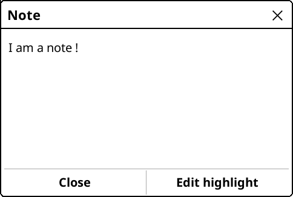
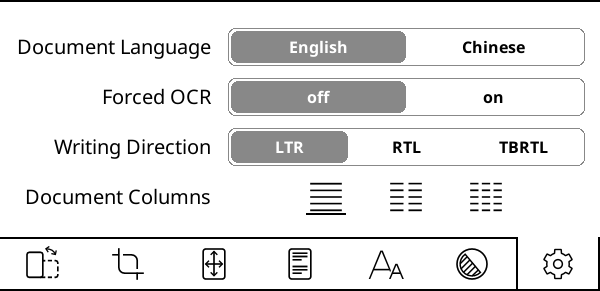

Vous êtes actuellement en train de lire la version Française du Guide d'utilisateur de KOReader. Aussi des volontaires traduisent ce guide dans d'autre langues. Nous avons plusieurs traductions en cours, comme vous pour le voir dans le status global de traduction ci-dessous. Mais nous ne renvoyons qu'aux langues traduites à plus de 50 % pour des raisons de facilité d'utilisation.
Plus de 80% traduit
Pour voir toutes les langues actuellement traduites et contribuer à la traduction du guide d'utilisation, rendez-vous sur la page de traduction Weblate de notre projet.
Statut général de la traduction du guide d'utilisation

Ce guide est conçu pour les écrans couleur. Si vous l’utilisez pour la première fois, nous vous recommandons fortement de le lire sur un ordinateur, une tablette ou un mobile. Cela permet d’afficher les éléments de l’interface surlignés en couleur ce qui vous simplifiera la vie lors de votre apprentissage de l’utilisation de KOReader. Vous pouvez aussi bien sûr le lire sur votre appareil e-ink mais l’expérience ne sera pas optimale.
Vous pouvez utiliser la fonction de recherche de votre navigateur pour trouver un sujet ou un mot-clé spécifique (généralement Ctrl + F). Si vous avez une suggestion ou une question concernant ce guide d'utilisation, vous pouvez écrire à cette discussion GitHub.
Certaines parties du texte de ce guide sont codées par couleur en fonction de leur catégorie :
PARTIES DE KOREADER (BLEU) |
Barre d'état, Plan du livre… |
PARCOURS DE MENU (VERT) |
Menu Principal /  / Style de surlignage / Style de surlignage |
APPLICATIONS EXTERNES (VIOLET) |
Calibre, Readwise, KoHighlights ... |
Nous avons également prévu différents encadrés tout au long du guide pour vous informer ou vous avertir :
KOReader est développé et soutenu par des bénévoles du monde entier. Vous pouvez vous aussi participer à ce projet en :
- Correction de bugs et implémentation de nouvelles fonctionnalités
- Traduire le programme dans votre langue ou améliorer une traduction existante
- Aider les autres en partageant vos connaissances sur les forums ou dans les discussions et les tickets GitHub
Consultez la section Nous contacter pour les liens.
Dernière mise à jour du guide : 25/03/2025
- QUE POUVEZ-VOUS FAIRE AVEC KOREADER ?
- INFORMATIONS D'UTILISATION DE BASE
- APPRENDRE L'INTERFACE UTILISATEUR
- PARCOURIR VOTRE LIVRE
- PERSONNALISATION DE L'APPARENCE DU TEXTE
En dépit de son aspect minimaliste, KOReader est une application très puissante et personnalisable. Cette section est comme une table des matières de mode d'emploi. Si vous êtes un nouvel utilisateur, c'est le meilleur endroit pour commencer. Ici, vous pouvez lire ce dont KOReader est capable et apprendre à vous en servir en suivant ces  liens pour naviguer aux sections mentionnées.
- Mode de stockage de masse USB pour les appareils pris en charge 
- Stockage dans le Cloud (Dropbox/FTP/Webdav) avec les comptes appropriés 
- KOReader peut servir de serveur SSH, vous pouvez ainsi utiliser une application SFTP ou votre gestionnaire de fichier pour transférer directement vos fichiers 
- Avec le plugin Calibre, vous pouvez transférer les livres de votre Bibliothèque Calibre directement vers votre appareil KOReader via wifi 
- Avec le plugin de téléchargement d'informations , vous pouvez télécharger des entrées RSS et Atom sur votre appareil sous forme de fichiers HTML 
- Avec le plugin Wallabag, vous pouvez récupérer les articles de votre compte Wallabag (un service read-it-later similaire à Pocket) 
- Changer les polices (y compris les vôtres), tailles, contraste, gras, crénage, espacements de mots et de lignes, alignements, disposition des colonnes, marges... 
- Utilisez les puissants ajustements de style inclus ou écrivez les vôtres pour changer la façon dont s'affiche vos livres dans le moindre détail 
- Inverser les couleurs de l'écran pour le mode nuit manuellement ou automatiquement 
- Ajuster le ton de l'éclairage automatiquement 
- Surlignez le texte avec différents styles et couleurs, placez des signets 
- Mode double-tape pour le surlignage plus long/académique
- Ajoutez des notes à l’aide d’un clavier personnalisable incluant des modificateurs diacritiques 
- Prenez des captures d’écran 
- Suivez vos statistiques de lecture avec notamment la progression de lecture, la plage de temps et la vue du calendrier
- Exportez vos notes et surlignages vers votre appareil aux formats texte, markdown, HTML, JSON ou Kindle clippings 
- Synchronisez avec des services en ligne comme Joplin, Readwise, Memos, Flomo et XMNote 
- Un puissant navigateur de fichiers qui vous permet de copier, déplacer, renommer, créer, supprimer des fichiers et des dossiers, et d'effectuer des opérations groupées 
- Personnalisez votre bibliothèque selon vos préférences grâce à de nombreux modes d’affichage en mosaïque ou détaillés
- Ajoutez vos livres à vos favoris pour un accès rapide ou créez vos propres collections avec tri et filtres 
- Widget d'exploration pour passer rapidement d’une page, d’un chapitre ou d’un signet à l’autre 
- Carte de livre unique pour avoir une vue d'ensemble de votre livre incluant toutes vos notes et surlignages
- Explorateur de pages pour naviguer dans les pages comme une bobine de film 
- Navigateur de signets pour parcourir facilement vos surlignages et notes 
- Créez une table des matières alternative automatiquement ou manuellement si celle fournie avec votre livre ne vous convient pas 
- Masquez et excluez certaines parties de votre livre comme Annexe, Index, Références, etc., pour obtenir un comptage de pages plus précis 
- Un puissant système de gestes avec plus de 200 actions vous permet de contrôler chaque aspect de KOReader d’un simple tapotement ou glissement 
- Si vous disposez d’un clavier (interne, filaire ou Bluetooth), vous pouvez également attribuer des raccourcis clavier à ces actions 
- Ou créez vos propres menus avec vos actions préférées grâce au Menu rapide, et accédez-y d’un simple tapotement ou glissement 
- Créez des Profils pour contrôler chaque aspect de KOReader et automatiser des actions 
- Recherchez dans le document en sélectionnant ou en saisissant du texte (y compris les expressions régulières)
- Recherchez dans vos signets, surlignages et notes
- Consultez du texte dans Wikipédia ou dans les dictionnaires installés et traduisez-le par un appui long
- Traduisez toute la page en une seule fois dans plus de 130 langues
- Avec notre puissant système de plugins, vous pouvez même discuter du texte avec ChatGPT (après avoir installé le plugin) 
- KOReader peut se mettre à jour 
- Réduisez l'intensité ou éteignez l'éclairage de l'écran après un temps défini
- Configurer l'intervalle d'actualisation des pages pour vous adapter à différentes conditions de lecture
- Définissez votre propre écran de veille parmi de nombreuses options telles que images aléatoires, couverture de livre, lecture en cours, progression, etc.
- Définissez des alarmes de limite de charge de batterie pour éviter la décharge profonde/surcharge 
- Définissez une alerte d’utilisation de mémoire (utile pour les appareils à faible mémoire) et, si vous le souhaitez, redémarrez KOReader à l’atteinte de cette limite 
- Recadrez les marges automatiquement ou manuellement
- Remise en page des documents pour extraire le texte et lire plus facilement sur un petit écran
- Appliquez l’OCR aux documents sans calques de texte, comme les livres anciens numérisés 
- Différents types de zoom et sens de défilement des pages pour lire aisément les documents multi-colonnes comme les articles scientifiques
- Redressez automatiquement les documents inclinés, comme les livres anciens numérisés 
- Enregistrez vos surlignages directement dans les PDF afin de pouvoir les voir sans KOReader 
- Fonctionnalité spéciale de zoom par case pour lire les mangas
- Vitesse de rafraîchissement d'écran modifiable pour un équilibre parfait entre image fantôme et vitesse
- Ajoutez vos propres modifications de style CSS pour les livres 
- Système de patchs utilisateur qui vous permet de modifier les comportements fondamentaux de KOReader 
- Créez un code QR à partir de votre presse-papiers pour partager du texte et des liens vers d'autres appareils
- Affichez le code source HTML d’un document EPUB
- Créez et modifiez des fichiers texte sur votre appareil
- Ouvrez un émulateur de terminal et exécutez des commandes sur votre appareil
- Visionnez les statistiques d’utilisation du processeur, de la mémoire et de la batterie
KOReader prend en charge les fichiers PDF, EPUB, DJVU, MOBI, CBZ, CBT, DOCX, RTF, HTML, TXT, XPS, FB2, PDB, CHM et MD. Il peut également ouvrir les archives ZIP et afficher les fichiers image.
Il existe de nombreuses façons de transférer vos documents sur votre appareil. Notez que vous devrez peut-être redémarrer KOReader pour indexer les documents transférés (ou actualiser le répertoire si vous avez un Pocketbook/Android).
En plus de transférer des fichiers de la même manière qu’avec l’application de lecture intégrée, d’autres options sont disponibles selon votre appareil :
- Mode de stockage de masse USB dans KOReader : Ce mode est disponible pour les appareils KOBO et certains CERVANTES.
- Stockage cloud (Dropbox/FTP/Webdav) : Pour utiliser cette fonction, vous devez ajouter des comptes pour un serveur de stockage cloud via le menu ci-dessous. Le processus est expliqué via les boutons info dans le menu lors de l'ajout de comptes :
MENU SUPÉRIEUR (dans l'Explorateur de fichiers) /
 / Stockage en ligne
/ Stockage en ligne - Accès SSH/SFTP : KOReader peut agir comme un serveur SSH, auquel vous pouvez accéder depuis un ordinateur pour transférer des fichiers (disponible sur Kobo, Kindle, Cervantes). Vous pouvez utiliser une application SFTP (comme Filezilla) ou y accéder via votre gestionnaire de fichiers si votre système d’exploitation le permet. Consultez notre wiki pour le mode d’emploi et lisez également le message d’avertissement ci-dessous.
- Transfert via Calibre : Avec le plugin Calibre, vous pouvez envoyer des documents de votre bibliothèque Calibre directement vers vos appareils KOReader via une connexion wifi. Consultez notre wiki pour le mode d'emploi.
- Téléchargement d'informations : Avec ce plugin, vous pouvez télécharger les actualités de flux RSS et Atom sous forme de fichiers HTML. Consultez le wiki pour le mode d'emploi.
- Wallabag : Avec ce plugin, vous pouvez récupérer des articles depuis Wallabag, un service de lecture différée basé sur des serveurs tels que Pocket. Consultez la page wiki pour plus d'informations.
AVERTISSEMENT Soyez prudent si vous décidez d'utiliser la fonctionnalité SSH sans mot de passe, car cela permet un accès libre à votre appareil. Mais si vous utilisez un wifi personnel et activez le wifi de votre appareil pour une courte durée, ce risque est négligeable.
Les méthodes suivantes sont disponibles pour accéder à vos livres :
- Explorateur de fichiers - Section dédiée ici : Utilisation de l’explorateur de fichiers
- Favoris - Une liste à laquelle vous pouvez ajouter vos livres en appuyant longuement dessus depuis l’ Explorateur de fichiers
- Historique - Liste des livres que vous avez ouverts
- Collections - Listes de livres personnalisées que vous pouvez créer. Section dédiée ici : Collections
Vous pouvez modifier l'apparence de ces vues à partir de :
 / Mode d’affichage
/ Mode d’affichageSi vous souhaitez modifier le nombre d’éléments visibles sur ces vues, regardez ici :
/ Réglages/ Paramètres de mosaïque et de liste détailléeVous pouvez attribuer des gestes à chacun de ces dialogues. Par exemple, pendant la lecture d’un livre, vous pouvez accéder à votre Historique ou à vos Favoris avec un geste et ouvrir un autre livre sans passer par l’Explorateur de fichiers.
Vous pouvez rechercher un livre dans le menu Historique par nom de fichier ou métadonnées du livre à partir du bouton menu hamburger en haut à gauche.
Vous pouvez également configurer KOReader pour qu’il démarre sur l’écran Favoris ou Historique au lieu de l’Explorateur de fichiers via :
/ Démarrer avec
Dans l’image ci-dessus, vous pouvez voir l’emplacement des zones tactiles par défaut de KOReader. Pour afficher le menu supérieur ou le menu inférieur, vous pouvez appuyer sur les zones indiquées. Vous pouvez également faire glisser vers le bas la zone supérieure pour afficher le menu supérieur. Sur les appareils non tactiles comme le Kindle 4, vous pouvez ouvrir le menu inférieur en appuyant sur le bouton correspondant à l’action ENTRÉE/OK.
Si vous souhaitez ouvrir les deux menus en même temps, vous pouvez définir la zone du menu supérieur pour ouvrir à la fois le menu supérieur et le menu inférieur en même temps via ce menu :
 / Touchers et gestes / Activation du menu
/ Touchers et gestes / Activation du menu
Les zones de touchers des coins peuvent être utilisées pour de nombreux types de gestes, notamment TAPER, DOUBLE-TAPER, TAPOTER AVEC DEUX DOIGTS et TOUCHER ET MAINTENIR.
Les zones PAGE PRÉCÉDENTE et PAGE SUIVANTE peuvent également être utilisées pour des gestes de DOUBLE TAPE en même temps.
La zone de la barre d’état peut être touchée pour faire défiler les éléments de la barre d’état si un seul élément est visible. Si tous les éléments sont visibles, toucher la zone affichera ou masquera la barre d’état.
- Modification de la police*:MENU SUPÉRIEUR / / Police
- Agrandir la police :MENU INFÉRIEUR /

- Rendre la police plus épaisse :MENU INFÉRIEUR /

- Inverser les couleurs à l’écran (blanc sur noir) :MENU SUPÉRIEUR / / Mode Nuit
Vous pouvez également modifier d’autres options de formatage depuis le MENU INFÉRIEUR pour ajuster précisément l’apparence de votre texte. Ce sont simplement des astuces rapides pour bien commencer, bien sûr. Nous avons une section complète dédiée à la PERSONNALISATION DE L’APPARENCE DU TEXTE
Vous pouvez contrôler l'éclairage de votre écran via ce menu. Si vous avez un éclairage chaud (LED blanches normales + oranges) vous pouvez les contrôler séparément depuis cette boîte de dialogue. Vous pouvez également définir un geste pour cette boîte de dialogue :
/ ÉclairageVous pouvez choisir une couverture de livre ou une image personnalisée comme écran de veille via ce menu :
/ Écran / Écran de veilleVous pouvez utiliser des fichiers JPG/PNG comme économiseur d’écran (les images en niveaux de gris correctement tramées offrent le meilleur rendu). Transférez les fichiers depuis votre ordinateur dans n’importe quel dossier de votre appareil. Puis sélectionnez ce dossier comme dossier d’économiseur d’écran via ce menu :Vous pouvez utiliser des fichiers JPG/PNG comme économiseur d’écran (les images en niveaux de gris correctement tramées ont le meilleur rendu). Transférez les fichiers depuis votre ordinateur vers n’importe quel dossier sur votre appareil. Sélectionnez ensuite ce dossier comme dossier d’économiseur d’écran dans ce menu :
/ Écran / Écran de veille / ParamètresVeuillez consulter ce post du forum Mobileread pour des informations supplémentaires sur la préparation des images d’économiseur d’écran.
Si vous cherchez des informations sur les raccourcis clavier, cliquez ici pour accéder à cette section. Cette section explique uniquement l’utilisation du clavier.
- Appuyez en dehors du champ de saisie pour fermer le clavier, appuyez sur le champ de saisie pour afficher de nouveau le clavier
- Faites glisser vers le haut sur une touche pour saisir la lettre en majuscule (ou en minuscule si vous êtes déjà en mode majuscule)
- Vous pouvez modifier l’apparence du clavier :
MENU PRINCIPAL / / Appareil / Clavier / Paramètres d'apparence du clavier
- Vous pouvez sélectionner plus d'une disposition :
MENU SUPÉRIEUR / / Appareil / Clavier / Disposition du clavier
- Vous pouvez changer de disposition parmi celles que vous avez sélectionnées en appuyant sur l’icône
 sur le clavier
sur le clavier
Le clavier KOReader permet de saisir des caractères supplémentaires en maintenant une touche enfoncée. Les caractères supplémentaires les plus utilisés sont affichés ci-dessous. Vous pouvez appuyer longuement sur la touche dans la boîte grise pour obtenir les caractères qui l’entourent :

En plus du menu contextuel lors d'un appui long, vous pouvez également saisir ces caractères supplémentaires en faisant glisser votre doigt sur une touche. Dans l'exemple ci-dessous, vous pouvez faire glisser vers le haut sur la touche a pour saisir un A majuscule ou faire glisser dans d'autres directions pour saisir les caractères affichés. Notez que l'exemple montré inclut le menu contextuel complet à des fins de démonstration. Vous n'avez pas besoin d'ouvrir ce menu contextuel, vous pouvez directement faire glisser sur les touches. Une fois que vous vous serez habitué à l'emplacement des caractères supplémentaires, vous pourrez les saisir beaucoup plus rapidement de cette façon.

Si cette fonctionnalité interfère avec votre utilisation, vous pouvez la désactiver en décochant :
/ Appareil / Clavier / Faites glisser pour saisir des caractères supplémentairesDe plus, il existe quelques raccourcis pour faciliter la manipulation du texte. Vous pouvez appuyer longuement sur ces touches pour des actions supplémentaires :
- Flèche gauche - Déplace le curseur au début de la ligne
- Flèche droite - Déplace le curseur à la fin de la ligne
La touche retour arrière se comporte également différemment selon le geste de glissement effectué dessus :
- Appui : Supprimer un caractère
- Appui long : Supprimer toute la ligne
- Glisser vers la gauche : Supprimer une partie du mot à gauche du curseur
- Glisser vers le haut : Supprimer le mot entier
Pour plus d’informations, vous pouvez consulter la page wiki associée.
KOReader intègre également un clavier chinois pour saisir des caractères chinois simplifiés et traditionnels. Vous pouvez en savoir plus à ce sujet sur notre wiki.
Ce plugin vous permet d'ajuster la chaleur du rétroéclairage sur les appareils avec lumière naturelle (jaune/orange) et de définir le mode nuit (couleurs d'écran inversées — texte blanc sur fond noir) automatiquement selon un calendrier. Il peut contrôler les deux ou vous pouvez choisir le mode contrôle de la chaleur uniquement ou contrôle du mode nuit uniquement, afin de pouvoir ajuster l'autre manuellement.
Ce plugin est activé par défaut lors de l'installation de KOReader. Si pour une raison quelconque il n’apparaît pas dans le menu, vous pouvez l’activer ici :
/ Plus d'outils / Chaleur Automatique et Mode NuitVous pouvez ajuster automatiquement la chaleur de l'éclairage frontal de deux façons :
Horaire fixe: Dans ce mode, la chaleur de l'éclairage change en fonction du programme quotidien que vous définissez. Ce mode est statique et ne prend pas en compte la durée d'ensoleillement. Cet horaire reste le même tout au long de l'année.
Position du Soleil: Cette option calcule la position du Soleil pour votre localisation grâce aux informations de coordonnées et d'altitude que vous entrez. La chaleur de l'éclairage est ajustée progressivement en fonction des informations relatives à la position du Soleil. Ce mode est dynamique. Le plug-in modifie le programme en fonction de la durée d'ensoleillement au cours de l'année.
Veuillez vous aider de cette image afin de vous familiariser avec les termes utilisés dans le plug-in :

- Accéder au menu du plug-in : MENU PRINCIPAL / / Écran / Mode chaleur automatique et nuit
- Appuyez sur En fonction du programme fixe
- Retournez au menu précédent et tapez sur l'option Paramètres du mode Horaire fixe
- Définissez votre programme de transition thermique en réglant ici les horaires pour différents éléments. Reportez-vous à l'image ci-dessus pour obtenir des explications sur les éléments.
- Accéder au menu du plug-in :
MENU PRINCIPAL / / Écran / Mode chaleur automatique et nuit
- Tapez sur Activer dans le menu, puis tapez sur En fonction de la position du Soleil
- Retournez au menu précédent et tapez surParamètres de localisation. Entrez vos coordonnées(requis) et votre altitude(optionnel) correctement, puis nommez votre localisation.
- Retournez au menu précédent et tapez sur l'option Paramètres de la chaleur et du mode nuit
- Définissez votre programme de transition thermique en réglant ici les horaires pour différents éléments. Reportez-vous à l'image ci-dessus pour obtenir des explications sur les éléments.
Vous pouvez voir votre programme actuel dans le menu Paramètres actifs.

Lors du paramètrage de la chaleur de la lumière pour différents horaires, vous pouvez aussi sélectionner le Mode Nuit, qui inverse les couleurs de l'écran au début de cet horaire. Si le rétroéclairage minimum est trop fort pour vous ou que vous préférez un fond de page sombre, vous pouvez activer cette fonctionnalité. Pour cela, dans la boîte de dialogue dessous, cochez la case Mode Nuit et tapez sur Activer.
Une fois activé, une icone en forme de lune va apparaître dans le menu à côté de cet horaire. Pour désactiver le mode nuit, il suffit de décocher la case correspondant au Mode Nuit pour cet horaire.

Cette fonctionnalité allume le rétroéclairage au moment du coucher du soleil et l'éteint au lever du soleil en fonction de vos Paramètres actifs pour ce plug-in. Vous pouvez contourner cette options en allumant/éteignant manuellement le rétroéclairage. Au prochain level/coucher de soleil, Chaleur Automatique se réactivera si nécessaire. Vous pouvez l'activer en sélectionnant Éteindre le rétroéclairage en journée dans ce menu.
Si vous voulez que votre lumière chaude change rapidement au lieu d'un changement progressif :
- Réglez le mode sur Horaire fixe en suivant les instructions ci-dessus
- Et ajustez les réglages comme l'image ci-dessous :

Comme vous pouvez le voir dans les paramètres ci-dessus, il n'y a qu'une minute de différence entre la transition jour-nuit. Donc la température de l'écran passe de 0 à 100 (ou inversement) en seulement une minute. Vous pouvez augmenter cet écart pour rendre la transition plus longue.
KOReader a une interface utilisateur simple, principalement noir et blanche parce que les gradients et différentes nuances de gris peuvent causer des flash et du ghosting sur les écrans e-inks, ce qui peut dégrader l'expérience de lecture.
KOReader a 2 interfaces principales : affichage de lecture et navigateur de fichiers. Nous allon expliquer l' affichage de lecture ici. Navigateur de fichiers est expliqué dans cette section du guide.
AFFICHAGE DE LECTURE a deux menus :
- LeMENU SUPÉRIEURregroupe les éléments du menu liés à l'usage général de KOReader. Vous accéderez à vos livres, préférences KOReader, plugins etc. ici.
- Le-MENU INFÉRIEURest axé sur les options deformatage de documentscomme le poids/taille de la police de caractère, l'espace entre les lignes etc. Pendant l'ajustement de votre apparence de texte, vous interagirez surtout avec leMENU INFÉRIEUR.


L'image ci-dessus montre les éléments que vous pouvez voir sur votre liseuse quand vous lisez un livre :
- Icônes indicatrices : Ces icônes vous informent sur certains processus en cours et des états actuels. Elles s'affichent dans le coin supérieur gauche de votre écran lors de certaines opérations. Elles sont plus petites mais nous les avons agrandies pour plus de clarté. La rubrique suivantes explique ces icônes indicatrices en détail : Icônes indicatrices
- LaBarre d’état est une région très configurable où vous pouvez voir de nombreuses informations à propos de votre livre et de KOReader. Cliquez ici pour aller à la section : Cliquez ici pour plus de détails : Barre d’état
- Barre d'état alternative:En plus de laBarre d'étatpar défaut, nous avons uneBar d'état alternativequi apparait en haut de la page si vous l'activez. Cliquez ici pour plus de détails:Bar d'état
- Numéros de page de référence : Si l'éditeur de votre livre a inclus les numéros de pages de la version imprimée, il seront affichés de cette manière. Cliquez ici pour plus d'informations : Numérotation des pages et numéros de page de référence
- Types de surlignage : Vous pouvez voir les différents types de surlignage ici. Vous pouvez aussi surligner en couleur si votre liseuse le supporte. Cliquez ici pour aller à la section : Signets, Surlignage et Annotations
- Marqueur de note : L'icône du marqueur de note apparaît lorsque vous ajoutez une note à une surbrillance. Il existe différents types de marqueurs de note. Cliquez ici pour plus d'informations : Signets, Surbrillance et Notes
Koreader possède des icônes pour vous informer de certains processus en cours et de leurs états, comme vous pouvez le voir dans l'image ci-dessus. Vous pourrez les voir dans le coin en haut à gauche et votre écran lors de certaines opérations.
   
|
Icônes de rendu partiel Ce groupe d'icônes fait partie de la procédure de rendu partiel et vous verrez probablement ces icônes plus souvent que les autres. Ces icônes apparaissent lorsque vous modifiez les paramètres du menu inférieur. Cette fonctionnalité vous permet de prévisualiser les ajustements faits à l'apparence du texte bien plus vite en ne faisant que le rendu du chapitre en cours plutôt que celui du livre complet. De plus, changer l'orientation de l'écran est bien plus rapide grâce à cette fonctionnalité. Cette fonctionnalité est ACTIVÉE par défaut. Si nécessaire, elle peut être désactivée pour chaque livre (avec un appui court), ou pour tous (en restant appuyé) sur : MENU SUPÉRIEUR /
/ Document / Activer les rendus partielsAprès avoir confirmé vos modifications, l'ensemble du livre doit être ré-affiché. Il s'agit donc d'une procédure en plusieurs étapes. Ces icônes indiquent l'état d'avancement du rendu, comme expliqué ci-dessous : |
|
À ce stade, le document est rendu partiellement. Le nombre de pages, les informations en pied de page et de nombreux autres éléments sont inexacts. Vous pouvez voir à quoi ressemblent les nouveaux paramètres et les ajuster davantage. Vous pouvez également tourner les pages et utiliser les liens de saut dans cet état. |
|
Un rendu complet est en cours en arrière-plan. Vous pouvez toujours tourner les pages, cliquer sur les liens et modifier les paramètres. |
|
Le rendu complet est terminé, mais pas encore appliqué car KOReader attend que vous soyez inactif pour recharger le reste du livre (inactif = ne pas interagir avec l'appareil). Vous pouvez toujours tourner les pages, accéder aux liens, modifier les paramètres. |
|
|
Vous êtes resté inactif pendant un certain temps, KOReader est donc en train de recharger l'intégralité du document. À cette étape, KOReader est bloqué afin d'empêcher toute interaction. |
 |
Icône de surlignage Cette icône s'affiche lorsque vous êtes en mode Sélectionner et surligner. KOReader dispose d'un mode de surlignage supplémentaire qui vous permet de commencer un surlignage et de tourner les pages pour créer des surlignages longs pouvant s'étendre sur plusieurs pages. Vous pouvez en savoir plus à ce sujet dans la section MARQUE-PAGES, SURBRILLENCE ET NOTES de ce guide. Lorsque vous commencez une mise en surbrillance dans ce mode, cette icône s'affiche dans le coin pour vous rappeler que vous êtes toujours en mode de mise en surbrillance. Elle disparaît lorsque vous terminez votre mise en surbrillance en sélectionnant la fin du passage ou lorsque vous annulez la mise en surbrillance (en appuyant à nouveau sur le début de votre mise en surbrillance ou sur cette icône de mise en surbrillance). |
 |
Icône Pokemon Ball Cette icône apparaît lorsque vous appuyez longuement sur un mot (intentionnellement ou accidentellement). KOReader dispose d'un menu long appui normal. Et d'un menu supplémentaire très long appui lorsque vous maintenez votre doigt appuyé pendant plus de 3 secondes. Cette icône signifie que vous avez activé ce menu très long appui. |
 |
Icône du mode Flip Cette icône apparaît lorsque vous appuyez sur le coin supérieur gauche si :
Ce mode affiche temporairement la page complète sans recadrement, redimensionné pour s'ajuster à votre écran. Vous pouvez tourner les pages dans ce mode. Pour partir de ce mode, cliquez sur cette icône. |
Les types de documents comme epub, mobi, htlmn'ont naturellement pas de numéros de page puisque ce sont des documents reformatables. Ce qui veut dire que ces documents peuvent être ajustés à la taille de l'écran et de l'orientation de l'appareil (contrairement aux documentspdfoudjvupar exemple, qui ont une taille de page fixe).
Si vous augmentez la taille de la police d'un document reformatable, votre nombre de page augmentera aussi, puisque que moins de texte tiendra sur une seule page. Cela pose parfois un problème parce que un surlignement fait sur la page 38peut se retrouver sur lapage 42après l'ajustement de la police.
KOReader prend en charge la fonctionnalité Numéros de page de référence qui permet aux éditeurs d'intégrer les numéros de page des livres imprimés directement dans la version électronique. Lorsque vous activez cette fonctionnalité, KOReader ne calcule pas lui-même les numéros de page. Au lieu de cela, il affiche les numéros de page intégrés fournis par l'éditeur. Cela signifie que le numéro de page que vous voyez dans votre barre d'état correspond à la version imprimée du livre.
Avantages des numéros de page de référence :
- Les numéros de page de référence activent des citations correctes en correspondant les numéros de pages trouvés dans la version papier.
- Les numéros de page de référence peuvent aider pour la navigation, en particulier pour les lecteurs qui sont familiers avec la version imprimée d'un livre. Cela peut vous aider à trouver une passage spécifique ou citer plus facilement dans la version digitale.
- Puisque les livres digitaux peuvent être lus depuis plusieurs appareils et plateformes, chacun avec sa propre taille de police et paramètres d'affichage, les numéros de page peuvent changer de manière significative.Les numéros de page de référence constituent un point de vu consistent lors d'une lecture simultanée d'un même livre sur des appareils différents comme un e-reader et un téléphone.
Vous pouvez activer cette fonctionnalité depuis :
 / Page de référence/ Utiliser les Numéros de page de référence
/ Page de référence/ Utiliser les Numéros de page de référenceSi vous pouvez aussi cocher l'option Montrer la page de réference dans la margedans le même menu, les nombres de cette page seront indiqués à coté du texte écrit en petit.
Veuillez noter que ce menu n'apparaît que si votre livre contient des numéros de page de référence intégrés.
KOReader dispose de deux barres d'état, une barre d'état inférieure qui est activée par défaut. Et une barre d'état alternative qui apparaît en haut de la page si vous l'activez. Cette barre d'état alternative n'est disponible que dans les documents reformatables (epub, html, docx, rtf, txt…).
La barre d'état inférieureest la plus récente et la plus activement maintenue. LaBarre d'état alternativeest un vestige des version antérieures de KOReader donc nous n'ajoutons plus de nouvelles fonctionnalités à celle-ci. Mais vous pouvez quand même activer labarre d’état alternativesi vous la trouvez utile. Vous pouvez l'activer depuis :
/ Alt Status BarVous pouvez configurer labarre d’état alternativedepuis ce menu :
/ Barre d'état / Barre d'état alternativeLes instructions fournies dans le reste de cette section concernent la barre d'état inférieure.
Vous pouvez configurer la barre d'état inférieure à partir de ce menu. N'hésitez pas à explorer le sous-menu PARAMÈTRES pour personnaliser votre barre d'état comme vous le souhaitez.
/ Barre d'étatDe nombreux éléments peuvent être affichés dans la barre d'état. Mais par défaut, un seul élément est affiché à la fois et vous devez appuyer sur la barre d'état pour passer d'un élément à l'autre. Si vous souhaitez afficher tous les éléments à la fois, activez cette option ici :
/ Barre d'état / Configurer les éléments / Afficher tous les éléments sélectionnés en même tempsSi vous avez activé l'option ci-dessus, vous ne pouvez pas masquer la barre d'état en appuyant dessus. Si vous souhaitez la masquer, vous devez attribuer ici un geste pour activer/désactiver la barre d'état :
Tri des éléments de la barre d'état :
/ Barre d'état / Configurer les éléments / Organiser les éléments dans la barre d'étatIl existe un élément spécial dans la barre d'état appelé Texte personnalisé. Cet élément permet d'afficher le texte de votre choix dans la barre d'état. Vous pouvez également utiliser cette fonctionnalité pour créer un séparateur entre les éléments de la barre d'état, comme vous pouvez le voir dans l'exemple ci-dessous :

- Activez d'abord cette option en appuyant brièvement dessus dans ce menu
MENU SUPÉRIEUR / / Barre d'état / Texte personnalisé : « KOReader »
- Appuyez ensuite longuement dessus à nouveau pour ouvrir ses paramètres. Entrez un caractère « espace » dans la première case et entrez le nombre de répétitions dans la deuxième case, ce qui déterminera la largeur de votre séparateur.
Vous pouvez choisir un autre caractère comme séparateur. Vous pouvez également déplacer cet élément comme les autres éléments de la barre d'état afin de modifier son ordre et d'ajuster vos groupes.
La barre de progression dans la barre d'état affiche normalement votre progression pour l'ensemble du livre. Mais elle peut également indiquer votre progression dans le chapitre actuel. Cela peut être utile, par exemple, si un livre comporte de nombreux chapitres courts. Dans ce cas, il peut être difficile de voir votre progression dans le chapitre actuel, et la barre d'état du chapitre peut donc être plus informative. Vous pouvez activer cette fonctionnalité à partir de ce menu :
/ Barre d'état / Barre de progression / Afficher la barre de progression du chapitre à la placeVous pouvez également attribuer un geste pour basculer entre les barres de progression normales et celles des chapitres. Vous trouverez cette action sous :
Nous ne donnerons ici qu'un aperçu des éléments de la structure du menu supérieur afin de vous familiariser avec le menu. Vous trouverez des informations détaillées dans les sections correspondantes de ce guide.

- NAVIGATION : Ce menu contient des éléments qui vous permettent de naviguer dans le livre que vous êtes en train de lire. Table des matières, signets, plan du livre...
- COMPOSITION : Ce menu contient des éléments qui vous permettent de modifier l'apparence de votre livre. Paramètres de police, ajustements de style...
- PARAMÈTRES : Ce menu contient les paramètres de KOReader et de votre appareil. Paramètres E-ink, lumière, gestes...
- OUTILS : Ce menu contient des plugins qui permettent d'étendre les fonctionnalités de KOReader.
 RECHERCHE : Ce menu contient des éléments liés à la recherche et à la consultation. Recherche de texte, dictionnaire, traduction, Wikipédia...
RECHERCHE : Ce menu contient des éléments liés à la recherche et à la consultation. Recherche de texte, dictionnaire, traduction, Wikipédia...- EXPLORATEUR DE FICHIERS : Ce bouton ouvre l'explorateur de fichiers, qui est l'interface permettant de gérer votre bibliothèque.
 PRINCIPAL : Ce menu contient des outils permettant d'accéder à vos livres, tels que l'historique, les favoris, les collections. Les éléments informations sur le livre, mettre à jour et quitter se trouvent également dans ce menu.
PRINCIPAL : Ce menu contient des outils permettant d'accéder à vos livres, tels que l'historique, les favoris, les collections. Les éléments informations sur le livre, mettre à jour et quitter se trouvent également dans ce menu.

Mode d'affichage : Si vous passez en mode continu, vous pouvez faire défiler le document comme une page Web. Ce mode est plus adapté aux écrans non E-ink (LCD, OLED). En mode continu, vous perdez les marges supérieure et inférieure, ce qui peut entraîner une coupure du texte sur la première et la dernière ligne de l'écran. Pour résoudre ce problème, vous pouvez activer le chevauchement des pages :
/ Superposition de pagesMode d'affichage : Cette option détermine la manière dont votre document est affiché par KOReader. La valeur par défaut est WEB et, en général, vous n'avez pas besoin de modifier ce paramètre. Lorsqu'un livre (ou une page Web enregistrée) est très complexe (largeurs ou marges spécifiées, marges négatives, flottants, etc.) et que la mise en page est mauvaise ou déborde de l'écran, vous pouvez essayer d'autres modes de rendu.
Zoom (ppp) : ce paramètre peut être considéré comme un facteur de zoom général pour le document (à l'exception de la taille de la police). À 96 ppp (qui est le paramètre par défaut), les images du document sont rendues dans leurs dimensions d'origine. En principe, vous utiliserez ce paramètre si vous souhaitez agrandir les images sans agrandir le texte.

Les paramètres Espacement des mots et Expansion des mots sont liés et déterminent l'apparence de votre texte lorsqu'il est justifié. Lorsque vous justifiez du texte, un espace est ajouté entre les mots afin que les deux bords de chaque ligne soient alignés avec les deux marges. Étant donné que le nombre de mots par ligne n'est pas toujours le même, dans un alignement justifié, le texte doit être compressé ou étendu pour remplir la ligne.
Espacement des mots : Dans quelle mesure les caractères espace d'une ligne de texte peuvent être compressés pour accueillir davantage de mots. Ce paramètre n'affecte pas les mots, il modifie uniquement l'espace entre eux.
Expansion des mots : si une ligne contient trop d'espaces blancs, quelle quantité peut être répartie entre les mots en les étirant ? Ce paramètre affecte l'apparence des mots. Si vous ne souhaitez pas que vos mots soient étirés, définissez ce paramètre sur none.
Vous pouvez essayer différents paramètres jusqu'à ce que le texte vous convienne, puis les définir comme paramètres par défaut via leurs boîtes de dialogue respectives.

Contraste et Épaisseur de police sont deux options que vous pouvez utiliser pour rendre votre texte plus gras (ou plus clair). Vous pouvez obtenir le même résultat avec l'une ou l'autre de ces options, mais elles utilisent des méthodes différentes pour y parvenir. Vous pouvez bien sûr les utiliser simultanément.
Les différences entre eux peuvent être résumées comme suit :
+ Ne modifie pas la largeur de la police, la longueur du livre reste la même
+ Ne nécessite pas de réaffichage du document, plus rapide
- Peut donner un mauvais rendu sur les écrans LCD ou à faible résolution
+ Utilisera les polices pondérées appropriées si elles sont installées
+ Rend mieux sur les écrans LCD ou à faible résolution
- Doit réafficher les polices, ce qui ralentit le processus
Le hinting des polices ajuste votre texte pour une lisibilité maximale en fonction de la grille de pixels de votre écran. native utilise les instructions de hinting internes de la police, auto utilise l'algorithme de hinting de FreeType. auto est un choix plus sûr, car les fichiers de polices que vous avez installés peuvent contenir des instructions de hinting problématiques. De plus, auto gère mieux le texte CJK. Vous pouvez essayer différents paramètres pour voir lequel convient le mieux à votre appareil.
Le crénage des polices ajuste l'espacement entre les lettres afin d'obtenir un résultat visuellement agréable. L'option par défaut est best, qui peut être plus lente lors de l'ouverture des fichiers (selon votre appareil), mais qui prend mieux en charge les ligatures (voir l'exemple ci-dessous), les glyphes arabes joints et certains autres scripts. Si votre appareil est lent, vous pouvez essayer l'option good, qui est plus rapide et peut tout de même donner un résultat correct avec les textes en alphabet latin occidental.


Barre d'état alternative active une barre d'état alternative qui n'est disponible que dans les documents reformatables (EPUB, HTML, DOCX, RTF, TXT…). Après l'avoir activée ici, vous pouvez configurer barre d'état alternative via :
/ Barre d'état / Barre d'état alternativeStyle intégré et polices intégrées déterminent si les styles et polices de l'éditeur intégrés au document seront utilisés (ou ignorés) pour le rendu du document. Il s'agit de commutateurs généraux activés/désactivés. Vous pouvez affiner davantage les réglages de votre document via :
/ Modifications de styleLe redimensionnement des images détermine la manière dont les images de votre document sont rendues. Meilleur offre un rendu plus agréable, mais est plus lent.
L'interface utilisateur et les options de KOReader peuvent varier en fonction du type de fichier que vous ouvrez. Il existe deux catégories principales de documents :
- Documents à mise en page fixe (pdf, djvu, fichiers image...)
- Documents reformatables (epub, html, docx, rtf, txt…).
KOReader dispose de nombreuses fonctionnalités, ce qui se reflète dans la complexité de son système de menus. Nous avons une fonctionnalité Recherche dans les menus qui permet de trouver rapidement des éléments de menu. Si vous vous souvenez du nom d'un élément de menu mais pas de son emplacement, vous pouvez utiliser cette fonctionnalité :
/ Aide / Recherche dans le menuVous pouvez également attribuer cette fonctionnalité à un geste ou l'ajouter à votre menu rapide pour un accès plus rapide.
Dans le menu inférieur, si vous appuyez longuement sur le nom d'une option, vous pouvez voir son explication. |
|
Vous pouvez modifier la langue de l'interface via : MENU PRINCIPAL /
/ Langue |
|
Si vous souhaitez modifier la taille de l'interface utilisateur, il existe un paramètre DPI prévu à cet effet : MENU PRINCIPAL /
/ Écran / DPI de l'écranVous pouvez choisir une valeur dans le menu ou sélectionner DPI personnalisé pour entrer une valeur permettant un réglage précis : DPI plus élevé = interface plus grande. Notez qu'il existe également un paramètre Zoom (DPI) dans la barre inférieure. Celui-ci concerne uniquement les documents. Vous trouverez des explications à ce sujet dans la section suivante. |
Si vous appuyez longuement sur une option ou un élément de menu (épaisseur de police, interligne, etc.), vous pouvez définir sa valeur comme DEFAULT. La nouvelle valeur ne s'appliquera qu'aux livres ouverts à partir de maintenant. Les livres ouverts précédemment conserveront leurs paramètres. Vous pouvez identifier les valeurs par défaut grâce à une étoile (★) dans le menu ou à une bordure noire autour des indicateurs, comme illustré ci-dessous : 

|
Vous pouvez fermer les boîtes de dialogue en plein écran (Historique, Table des matières, Statistiques de lecture, etc.) en balayant vers le bas. (À l'exception de la fenêtre Signets. Vous pouvez utiliser n'importe quel geste de balayage multiple pour fermer celle-ci.) |
Vous pouvez prendre une capture d'écran en effectuant un long balayage diagonal avec votre doigt. Vous pouvez également prendre une capture d'écran en touchant les coins diagonaux opposés. Vous pouvez utiliser ce deuxième geste lorsque vous visualisez une image, par exemple. Si votre appareil dispose d'un clavier, vous pouvez également prendre une capture d'écran à l'aide du raccourci Alt + Maj + G. |
Si vous souhaitez ouvrir une page aléatoire d'un livre, nous proposons une action Aller à une page aléatoire que vous pouvez attribuer à n'importe quel geste. Elle se trouve dans la catégorie Lecteur du Gestionnaire de gestes. |

Dans les boîtes de dialogue contenant des boutons fléchés de réglage comme celle ci-dessus, vous pouvez appuyer longuement sur les boutons fléchés pour modifier la valeur par incréments plus importants. Vous pouvez fermer ce type de boîte de dialogue (non plein écran) en appuyant en dehors de sa fenêtre. Vous pouvez déplacer ce type de boîte de dialogue en maintenant son titre de fenêtre enfoncé et en le faisant glisser. Vous pouvez rendre ce type de boîte de dialogue semi-transparente en appuyant longuement sur le titre de la fenêtre (lorsque vous souhaitez voir le texte situé en dessous tout en ajustant une valeur). |
Création de nouveaux dossiers - Lorsque vous devez choisir un emplacement (stockage cloud, plugin de transfert vers les archives, plugin d'exportation), KOReader affiche un écran similaire à notre navigateur de fichiers. Si vous souhaitez créer un nouveau dossier pendant la sélection :
|
KOReader prend en charge la recherche dans le dictionnaire dans les documents EPUB et PDF/DJVU numérisés. Pour voir la définition ou la traduction d'un mot dans le dictionnaire, il suffit d'appuyer longuement sur le mot. Appuyez longuement sur un mot pour afficher une boîte de dialogue dans laquelle vous pouvez également rechercher d'autres occurrences de ce mot dans le document ou le rechercher sur Wikipédia. |
Si vous souhaitez vérifier la date actuelle, vous pouvez appuyer sur l'horloge dans le MENU SUPÉRIEUR. |
KOReader propose trois types de défilement tactile. Vous pouvez y accéder à partir de :
/ Touches et gestes / Défilement- Défilement classique : ce mode fonctionne exactement comme le défilement sur votre téléphone/tablette.
- défilement Turbo : ce mode vous permet de faire défiler plus rapidement qu'avec le défilement classique. Vous pouvez également faire défiler plusieurs pages sans lever le doigt. La distance parcourue est proportionnelle à la distance parcourue par votre doigt après avoir lancé le défilement.
- Défilement au relâchement : ce type de défilement est plus adapté aux écrans à encre électronique. Contrairement aux autres types de défilement, ce mode ne rafraîchit pas continuellement la page pendant le défilement. Il fonctionne comme le défilement classique, mais les étapes intermédiaires ne sont pas affichées. Ainsi, lorsque vous faites défiler avec votre doigt puis relâchez, la page passe directement à cette position. Cela est particulièrement utile pour repositionner et ajuster l'affichage si votre livre contient des images ou des tableaux et que vous souhaitez les voir dans leur intégralité.
Cette fonctionnalité utile fonctionne comme le bouton Retour de votre navigateur. Lorsque vous passez à une autre partie du livre à l'aide du widget Skim, de la liste des signets, de la carte du livre, etc., KOReader mémorise votre emplacement précédent. Cela est utile, par exemple, si vous suivez un lien interne ou une référence. D'une simple pression, vous pouvez revenir à l'endroit d'où vous venez. Vous pouvez accéder à cette fonctionnalité à partir de :
/ Retour à l'emplacement précédentVous pouvez également avancer à partir du même menu. Cette fonctionnalité est attribuée au geste multitouch . Vous pouvez l'attribuer à un autre geste si vous le souhaitez (comme appuyer sur un coin) ou l'ajouter à votre menu rapide.
KOReader effectue normalement un rafraîchissement complet des pages contenant des images (ce que vous pouvez observer sous la forme d'un flash noir). Cela permet d'éliminer les résidus et les images fantômes de la page précédente. Mais cela peut ne pas être nécessaire selon votre appareil et vos préférences personnelles. Vous pouvez désactiver cette fonction de rafraîchissement automatique ici :
/ Écran / Paramètres E-ink / Taux de rafraîchissement complet / Toujours clignoter sur les pages contenant des imagesVous pouvez également désactiver le clignotement noir de l'interface utilisateur à partir d'ici si cela vous dérange :
/ Écran / Paramètres E-inkIl existe différentes façons de parcourir votre document dans KOReader, chacune ayant ses propres avantages. Vous pouvez utiliser :
- Widget Skim
- Plan du livre
- Explorateur de Page
Skim Widget est un outil de navigation très fonctionnel. Vous pouvez l'utiliser pour :
- Accédez à n'importe quelle partie de votre livre en appuyant directement sur la barre de progression ou en saisissant le numéro de page
- Naviguer entre les chapitres
- Naviguer entre les signets
Comment ouvrir le widget Skim :
- Appuyez longuement sur la zone Barre d'état en bas de votre écran
- Dans ce menu : MENU SUPÉRIEUR / / Parcourir le document
- Vous pouvez lui attribuer un geste
- Vous pouvez l'ajouter à votre Menu rapide
Commençons par examiner rapidement le schéma ci-dessous. Vous remarquerez que nous avons deux widgets Skim différents. Ils ont les mêmes fonctions, seule leur taille diffère :
- WIDGET SKIM PLEIN ÉCRAN : Il s'agit du widget skim par défaut qui s'affiche lorsque vous installez KOReader. Il est plus grand que le widget skim compact, ce qui rend les boutons plus faciles à utiliser. Ce widget s'ouvre au centre de l'écran.
- WIDGET SKIM COMPACT : Il s'agit de la version allégée du widget skim par défaut. Il peut s'avérer plus utile si vous souhaitez mettre en évidence certains éléments, par exemple. Étant donné que ce widget est plus petit et s'ouvre en haut ou en bas de l'écran, il n'obstrue pas autant la page que le widget par défaut.
Si vous souhaitez utiliser le widget compact skim, vous pouvez le faire en choisissant Haut ou Bas dans ce menu :
/ Navigation / Positionner la boîte de dialogue Skim :ASTUCE Les deux widgets skim sont déplaçables. Vous pouvez les déplacer en appuyant sur une zone vide du widget et en le faisant glisser. Vous pouvez également rendre ces boîtes de dialogue semi-transparentes en appuyant longuement sur une zone vide du widget. Mais la semi-transparence n'est activée que dans sa position initiale. Une fois déplacé, un appui long le ramène à sa position initiale.
Revenons maintenant au schéma. Vous pouvez voir que certains boutons comportent deux descriptions de couleurs différentes : bleu et orange. Cela signifie que ce bouton a deux fonctions : une action pression normale et une action pression longue. Si vous appuyez normalement, il exécutera la fonction BLEUE. Si vous appuyez plus longtemps, il exécutera la fonction ORANGE.

Explications des éléments numérotés (action par appui long en gras) :
- Aller au début du chapitre précédent / Aller à la première page du livre
- Aller au signet précédent / Aller au premier signet du livre
- Ajouter la page actuelle aux favoris / Ouvrir la boîte de dialogue des favoris
- Aller au signet suivant / Aller au dernier signet du livre
- Aller au début du chapitre suivant / Aller à la dernière page du livre
- Reculer (-) ou avancer (+) d'autant de pages
- Ce numéro indique le numéro de la page actuelle. Si vous appuyez dessus, une boîte de dialogue s'ouvre et vous permet d'entrer un numéro de page ou un pourcentage pour y accéder directement. Si vous appuyez longuement dessus, vous revenez à la page où vous avez ouvert le widget skim. Cela est utile, par exemple, si vous souhaitez consulter rapidement une autre partie du livre et revenir à votre lecture là où vous l'avez laissée.
- Il s'agit de la barre de progression. Les lignes fines correspondent aux marques de chapitre qui indiquent le début des chapitres. Vous pouvez appuyer sur cette barre de progression pour accéder à cette partie du livre. Les petites flèches sont des flèches de début de session qui indiquent l'endroit où vous avez commencé à lire ce livre lors de la session en cours. Ces flèches sont réinitialisées lorsque vous passez d'un livre à un autre.
- Ce bouton dans le widget compact skim fonctionne de la même manière que la fonction d'appui long de l'élément numéro 7. Il vous ramène à la page où vous avez ouvert le widget skim. Cela est utile, par exemple, si vous souhaitez consulter rapidement une autre partie du livre et revenir à votre lecture là où vous l'avez laissée.
ASTUCE Si vous souhaitez ouvrir une page aléatoire d'un livre, nous proposons une action Aller à une page aléatoire que vous pouvez attribuer à n'importe quel geste. Elle se trouve dans la catégorie Lecteur du Gestionnaire de gestes.
KOReader peut afficher les limites des chapitres de vos documents dans le SKIM WIDGET et la PROGRESS BAR.

Si votre document comporte trop de niveaux de titres, vos marques de chapitre peuvent sembler encombrées, comme dans l'exemple ci-dessus. Vous pouvez modifier la profondeur des niveaux de marques visibles dans la table des matières via :
/ Paramètres / Barres de progression
Vous pouvez également utiliser cette table des matières réduite( TOC) pour :
- titres des chapitres (s'ils apparaissent dans la barre d'état)
- navigation entre les chapitres
- temps de lecture restant estimé
Ces options se trouvent dans le même menu.
Si votre document ne comporte pas de table des matières, vous pouvez activer TABLE DES MATIÈRES ALTERNATIVE. Lorsque ce paramètre est activé, KOReader créera une table des matières à partir des titres du document (si disponibles) ou à partir des fichiers HTML individuels dans l'EPUB. Appuyez longuement sur cet élément du menu pour obtenir plus d'informations :
/ Paramètres / Table des matières alternativeVous trouverez plus d'informations sur les outils de table des matières disponibles dans KOReader dans la section correspondante du guide : OUTILS DE TABLE DES MATIÈRES
Le plan du livre est une fonctionnalité puissante et unique de KOReader qui peut être très utile pour avoir une vue d'ensemble d'un livre. Par exemple, si vous lisez un livre de manière non linéaire en sautant certaines parties pour les lire plus tard, il peut être difficile de suivre votre progression. Le plan du livre vous permet de voir en un coup d'œil les parties du livre que vous avez déjà lues.
De plus, vous pouvez :
- De plus, vous pouvez : voir combien de temps vous avez passé sur chaque page (si le plugin Reading Statistics est activé)
- Vérifiez quelles pages comportent des signets, des surlignages et des notes
- Accédez directement à n'importe quelle partie du livre, comme le SKIM WIDGET
Vous pouvez accéder au plan du livre via le menu et vous pouvez également attribuer un geste pour un accès plus rapide :
/ Plan du livreLorsque vous ouvrez le plan du livre pour la première fois pendant la lecture d'un livre, celui-ci s'affiche en mode vue en grille, affichant tous les chapitres sur un seul écran afin de vous donner un aperçu optimal du contenu du livre. Pour obtenir des informations détaillées sur son utilisation, appuyez sur l'icône d'information située dans le coin supérieur gauche. Vous pouvez fermer le plan du livre en appuyant sur X dans le coin supérieur droit ou en effectuant n'importe quel geste multitouch (HAUT-BAS, GAUCHE-DROITE, etc.).

- Limites des chapitres
- Les barres noires indiquent les pages lues. Plus les barres sont hautes, plus le temps passé sur la page est long.
- L'icône Signet affiche les pages ajoutées aux favoris, comme son nom l'indique.
- L'icône carrée rayée indique les pages contenant des passages surlignés.
- L'icône en forme de crayon indique les pages contenant des notes.
- Les chiffres dans un cercle indiquent vos emplacements précédents. Lorsque vous sélectionnez Retourner à l'emplacement précédent dans le menu, vous revenez ici dans l'ordre.
- Le triangle indique la page actuelle.
- La barre de défilement verticale indique votre niveau d'affichage actuel.
- La barre de défilement verticale indique la largeur actuelle de la page.
Vous pouvez personnaliser Book Map en modifiant les options suivantes :
- Commencez par faire glisser votre doigt vers la GAUCHE et vers la DROITE le long du bord inférieur de l'écran pour modifier la largeur des colonnes indiquant les pages et observez comment cela modifie l'échelle du plan.
- Ensuite, essayez de balayer vers le HAUT et vers le BAS le long du bord gauche de l'écran pour modifier la profondeur du titre du chapitre et passer à la Vue Plate. Voir les exemples ci-dessous.
En plus de l'affichage par défaut Grid View ci-dessus, vous pouvez voir ici l'affichage Flat View à gauche et l'affichage Grid View sans titres de chapitres à droite. Notez la modification de la barre de défilement verticale gauche entre les affichages. Si vous souhaitez revenir à l'affichage par défaut, vous pouvez appuyer longuement sur l'icône d'information dans le coin supérieur gauche.


Lorsque vous appuyez sur l'icône du menu dans l'écran Plan du livre, le menu ci-dessus s'affiche. Les options du menu sont expliquées ci-dessous :
- À propos du Plan du livre : Brève explication de l'utilisation du plan du livre et description des icônes.
- Gestes disponibles : Gestes que vous pouvez utiliser pour modifier les paramètres du plan du livre au lieu d'utiliser ce menu.
- Navigateur de pages au toucher : Si cette option est cochée, lorsque vous touchez une page dans le plan du livre, le navigateur de pages s'ouvre. Il vous montre un aperçu de la zone que vous avez sélectionnée. Si vous désactivez cette option, un toucher dans le plan du livre vous amène directement à cette page. Mais n'oubliez pas que, selon certains facteurs tels que la taille de votre écran, la sensibilité de l'écran tactile, la précision de votre pression, etc., vous risquez de vous retrouver sur des pages adjacentes.
- Basculer entre les vues actuelle et initiale : si vous avez personnalisé votre vue Plan du livre, appuyez sur cette option pour basculer entre la vue par défaut et votre vue personnalisée.
- Basculer entre les vues en grille et en mode plat : Basculer entre les vues par chapitres séparés ou par chapitres continus.
- Niveaux des chapitres : Modifiez la profondeur des niveaux des chapitres/sous-chapitres.
- Largeur de l'emplacement de page : Élargissez ou rétrécissez chaque emplacement de page.
- Marqueurs toutes les 10 pages : lorsque vous augmentez cette valeur, des marqueurs sont d'abord ajoutés toutes les 10èmes pages, puis leur taille augmente et enfin, des marqueurs sont ajoutés toutes les 5èmes pages.
Le navigateur de pages permet de naviguer entre les pages comme dans un album photo en affichant des miniatures des pages sous forme de grille. Vous pouvez ouvrir le navigateur de pages en appuyant sur la carte du livre ou à partir du menu. Vous pouvez également attribuer un geste pour faciliter l'accès.
/ Navigateur de pages
L'utilisation du navigateur de pages est expliquée ci-dessous. Vous pouvez également appuyer sur le bouton du menu hamburger situé dans le coin supérieur gauche de cet écran pour afficher ces explications. Un appui long sur ce même bouton permet d'ajouter/supprimer des titres de chapitres dans la bande inférieure.
- Balayez vers la gauche / droite sur ce bord supérieur pour augmenter / diminuer le nombre de colonnes.
- Balayez vers le haut / vers le bas sur ce bord gauche pour augmenter / diminuer le nombre de lignes.
- Balayez la zone des pages pour déplacer les pages affichées. Haut/bas pour faire défiler une ligne (2 pages dans l'exemple), gauche/droite pour faire défiler un écran (4 pages dans l'exemple).
- Appuyez sur n'importe quelle page pour l'ouvrir en mode lecture.
- Dans la partie inférieure, appuyer sur une page permet d'afficher cette page en miniature. Balayer vers la gauche ou vers la droite permet de passer à la page suivante ou précédente.
- Les icônes situées dans la partie inférieure sont les mêmes que celles utilisées dans Book Map et expliquées dans cette section.
Le navigateur du plan du livre et de pages dispose d'un thème alternatif avec un schéma de nuances différent que vous pouvez activer à partir de leurs menus hamburgers. Ce thème utilise des couleurs alternées pour les titres de chapitres afin que les limites des chapitres soient plus visibles dans le plan du livre et le navigateur de pages. Mais l'utilisation de la couleur grise dans ce thème nécessite un clignotement vers le noir, ce qui peut distraire certains utilisateurs. Vous pouvez essayer les deux et utiliser celui qui vous convient le mieux.
Certains livres numériques que vous rencontrez peuvent ne pas avoir de table des matières (ToC) correcte. Selon la préparation du livre, vous pouvez rencontrer les problèmes suivants liés à la table des matières :
- Il n'y a pas de table des matières dans le livre, vous ne pouvez donc pas passer d'un chapitre à l'autre ni voir le temps de lecture restant
- Il y a une table des matières, mais elle n'est pas très utile car elle contient des titres de chapitres erronés ou manquants
KOReader dispose de certaines fonctionnalités que vous pouvez utiliser lorsque vous lisez des livres dont la table des matières pose problème.
Notez que Table des matières alternative n'est pas disponible sur les documents à mise en page fixe tels que les fichiers PDF, DJVU, etc., car elle nécessite des balises HTML pour créer une table des matières. Les fonctionnalités Table des matières personnalisée et Flux cachés personnalisés sont disponibles sur tous les types de fichiers.
La première fonctionnalité est le Table des matières alternative que vous pouvez trouver dans :
/ Paramètres / Table des matières alternativeTable des matières alternative tente de créer une table des matières à partir des titres de votre livre (balises H1 à H6 dans les fichiers HTML de votre EPUB). Si votre livre ne contient aucun titre, elle tentera de créer une table des matières à partir des fragments de document (fichiers HTML individuels dans votre livre EPUB) qui pointeront vers le début de chaque fichier.
Vous pouvez choisir les niveaux de titre à inclure (ou à ignorer) dans votre table des matières à partir de ce menu :
/ Modifications de style / Divers / Astuces alternatives pour la table des matièresLa fonctionnalité de table des matières personnalisée vous permet de créer votre propre table des matières à partir des parties sélectionnées de votre livre. Cette table des matières ne peut contenir qu'un seul niveau, vous ne pouvez donc pas avoir de sous-chapitres lorsque vous utilisez cette fonctionnalité. Pour créer votre propre table des matières, activez d'abord :
/ Paramètres / Table des matières personnaliséeUne fois cette fonctionnalité activée, de nouveaux éléments de menu seront ajoutés à l'interface utilisateur, vous permettant de sélectionner vos chapitres. Vous pouvez ajouter un chapitre à votre table des matières à partir de deux endroits :
- À partir d'un surlignage : Pendant que vous lisez un livre, sélectionnez un texte comme si vous le surligniez ou appuyez longuement sur un mot. Dans le menu contextuel, vous verrez l'élément Démarrer le chapitre TOC. Lorsque vous appuyez dessus, une boîte de dialogue s'affiche pour vous demander d'entrer le titre de votre chapitre. Le texte que vous avez sélectionné sera déjà saisi dans la boîte de dialogue. Modifiez votre titre si nécessaire et appuyez sur Créer.
- À partir du navigateur de pages : Ouvrez le navigateur de pages via
/ Navigateur de pagesAppuyez longuement sur la vignette de la page que vous souhaitez utiliser comme début de chapitre, puis sélectionnez l'élément Démarrer le chapitre de la table des matières dans le menu contextuel. Une boîte de dialogue s'affiche pour vous demander d'entrer le titre de votre chapitre.
Lorsque vous avez terminé de créer votre table des matières et que vous ne souhaitez plus voir ces boutons supplémentaires, vous pouvez les désactiver en décochant :
/ Paramètres / Fonctionnalités de mise en page personnalisées / Mode éditionLa création de cette table des matières ne modifiera pas la table des matières originale fournie avec votre livre. Vous pouvez effacer votre table des matières personnalisée à partir de ce même menu (si vous souhaitez en créer une nouvelle). Et vous pouvez désactiver complètement cette fonctionnalité de la même manière que vous l'avez activée, si vous souhaitez revenir à la table des matières d'origine. Notez que si vous désactivez cette fonctionnalité après avoir créé une table des matières personnalisée pour revenir à la table des matières d'origine, votre table des matières personnalisée ne sera pas supprimée. Vous pouvez toujours basculer entre la table des matières d'origine et votre table des matières personnalisée.
Certains livres ou documents peuvent contenir de longues notes de bas de page ou des sections bibliographiques. Par exemple, un ouvrage scientifique de 250 pages dont les 50 dernières pages sont consacrées aux annexes, à l'index et aux références. Normalement, ces pages sont incluses dans la barre de progression et dans le calcul du temps de lecture, car elles font partie intégrante du livre. Mais en général, ces sections existent à titre de référence et ne sont pas lues dans leur intégralité. Vous pouvez donc les exclure afin d'obtenir une estimation plus précise du nombre de pages restantes et du temps de lecture. Ou peut-être avez-vous un recueil contenant des histoires que vous avez déjà lues. La fonction Flux cachés personnalisés de KOReader vous permet d'exclure ce type de parties de votre livre.
Consultez l'image pour avoir un aperçu du processus. Les étapes seront expliquées après l'image :

Comment exclure une section en créant un flux caché :
- Allez à la première page de la section que vous souhaitez exclure
- Ouvrez le navigateur de pages via :
MENU SUPÉRIEUR / / Navigateur de pages
- Appuyez longuement sur la vignette de la page que vous souhaitez placer au début de votre section exclue, puis sélectionnez l'élément Commencer le flux masqué ici dans le menu contextuel.
- Vous verrez que les pages à partir de votre sélection ont désormais un fond gris hachuré.
- Rendez-vous maintenant à la dernière page de la section exclue. Vous pouvez y accéder à partir du Navigateur de pages ou en utilisant d'autres moyens tels que Plan du livre, Widget Skim, etc.
- Une fois que vous êtes à la dernière page de votre section exclue, ouvrez à nouveau le Navigateur de pages (si vous n'y êtes pas déjà ).
- Trouvez la dernière page de votre section cachée et appuyez longuement sur la page suivante. Choisissez Reprendre le flux normal ici dans le menu contextuel. Vous verrez que l'arrière-plan des pages restantes reprendra sa couleur normale, indiquant la fin du flux caché et le début du flux normal.
Travailler avec les sections cachées :
Lorsque vous créez une section cachée comme décrit ci-dessus, le comportement de KOReader sera similaire à celui observé lorsque vous retirez une section d'un livre papier en la découpant :
- Ces sections de flux masquées seront ignorées lorsque vous tournerez les pages. Supposons, par exemple, que vous ayez créé un flux masqué pour le chapitre 10. Vous vous trouvez actuellement à la dernière page du chapitre 9. Lorsque vous tournerez la page, vous verrez apparaître le chapitre 11.
- La numérotation des pages se poursuivra comme si ces sections de flux masquées n'existaient pas.
- Ces sections cachées n'apparaîtront pas dans votre barre de progression (mais lisez l'explication ci-dessous) et ne seront pas prises en compte dans les calculs du temps de lecture. Elles resteront toutefois visibles dans le widget Skim.
- Les liens directs vers les pages incluses dans ces sections cachées continueront de fonctionner. Vous pouvez également accéder à ces sections à partir de la table des matières, de la carte du livre, du navigateur de pages et du widget Skim.
Comme nous l'avons mentionné plus haut, vos flux cachés seront exclus de votre barre de progression. Mais si vous accédez à l'une de vos sections cachées à l'aide de l'une des méthodes mentionnées ci-dessus, votre barre de progression devient temporairement la barre de progression de cette section cachée. Vous pouvez imaginer cela comme si la barre de progression zoomait sur cette section cachée. Si vous quittez cette section cachée en tournant la page à la fin de celle-ci ou en utilisant d'autres outils de navigation, votre barre de progression reviendra à l'affichage de l'ensemble du livre (vos flux cachés personnalisés ne seront à nouveau pas visibles).
Suppression et nettoyage des sections cachées :
Vous pouvez supprimer des sections de flux masquées individuelles à partir du Navigateur de pages de la même manière que vous les avez créées. Vous pouvez également toutes les effacer en même temps à l'aide de l'option de menu :
/ Paramètres / Fonctionnalités de mise en page personnalisées / Effacer toutes les pages marquéesLorsque vous créez des flux cachés en balisant des pages avec Démarrer le flux caché ou Redémarrer le flux normal, certains des flux créés précédemment peuvent cesser d'avoir un effet. Par exemple, si vous créez Démarrer le flux caché quelques pages avant un Démarrer le flux caché existant, celui-ci n'est plus pris en compte. Ces balises qui se chevauchent ou qui sont obsolètes sont mémorisées à des fins pratiques. Toujours dans l'exemple précédent, si vous terminez ce deuxième flux caché avant le flux caché existant mais qui n'est plus pris en compte, ce flux désactivé sera à nouveau pris en compte. Vous pouvez effacer tous ces marqueurs inactifs s'ils interfèrent avec vos flux personnalisés, ou une fois que vous avez terminé de créer vos flux cachés et que vous êtes satisfait des résultats :
/ Paramètres / Fonctionnalités de mise en page personnalisées / Effacer les pages marquées comme inactivesDans certaines applications de lecture, lorsque vous modifiez un paramètre, par exemple la police utilisée pour les livres, ce changement s'applique globalement. Cela signifie que si vous remplacez la police par défaut par Verdana, tous les livres que vous ouvrirez ensuite, y compris ceux que vous êtes déjà en train de lire, s'afficheront dans cette police Verdana.
L'approche de KOReader est différente. Nous enregistrons les paramètres d'apparence pour chaque livre. Cela vous permet de modifier les paramètres du livre en cours sans affecter les autres. Par exemple, si vous possédez des livres fantastiques, vous pouvez changer la police pour une police d'aspect médiéval uniquement pour ces livres. Vous pouvez également configurer certains livres pour qu'ils s'ouvrent en mode paysage ou double colonne.
Pour modifier un paramètre de manière globale, appuyez longuement sur une option ou un élément de menu (épaisseur de police, interligne, etc.) afin de définir sa valeur par défaut. Comme indiqué ci-dessus, cette nouvelle valeur ne s'appliquera qu'aux livres ouverts à partir de maintenant. Les livres ouverts précédemment conserveront leurs paramètres. Vous pouvez identifier les valeurs par défaut grâce à une étoile (★) dans le menu ou à une bordure noire autour des indicateurs, comme illustré ci-dessous :
Ainsi, lorsque vous modifiez les paramètres par défaut de votre document, tels que l'interligne par défaut ou le contraste par défaut, cette nouvelle valeur ne sera utilisée que pour les nouveaux documents que vous ouvrirez après la modification. Les livres déjà ouverts ne seront pas modifiés.
Mais que faire si vous souhaitez également les modifier ? Par exemple, si vous modifiez votre police par défaut font, vous ajusterez probablement font weight et line spacing à des valeurs plus adaptées à cette nouvelle police. Vous êtes satisfait de l'apparence du texte et vous souhaitez désormais que tous vos livres aient cette apparence. Grâce à cette fonctionnalité, vous n'avez pas besoin de modifier manuellement ces valeurs dans tous vos livres ouverts.
Vous pouvez facilement appliquer ces modifications à vos livres déjà ouverts en choisissant :
/ Réinitialiser les paramètres du document par défautLorsque vous appuyez sur cette option, les paramètres actuels de votre livre seront remplacés par les derniers paramètres par défaut que vous avez définis. Ne vous inquiétez pas, cela ne modifiera que l'apparence du livre. Votre position de lecture, vos surlignages, vos notes et vos signets seront conservés.
Lorsque vous modifiez un livre à votre convenance, par exemple en changeant l'interligne, contraste de la police, etc., vous pouvez enregistrer toutes les modifications en une seule fois comme paramètres par défaut. Vous pouvez ensuite appliquer ces paramètres à d'autres livres à l'aide de l'option Réinitialiser les paramètres du document par défaut, comme expliqué ci-dessus.
Vous pouvez enregistrer vos modifications en tant que valeurs par défaut en sélectionnant :
/ Enregistrer les paramètres du document comme paramètres par défautCette fonctionnalité puissante vous permet d'enregistrer tous les paramètres du MENU INFÉRIEUR + le type de police sous forme de profil. Cela signifie que vous pouvez disposer de différents groupes de paramètres pour différentes conditions ou différents types de livres, que vous pouvez appliquer en une seule fois au lieu de modifier les paramètres manuellement à chaque fois.
Par exemple, vous pouvez créer :
- Profil à double colonne avec deux colonnes de texte de petite taille, orientation paysage et marges minimales
- Profil lecture nocturne avec police sans empattement plus grande et contraste plus élevé pour un texte plus visible dans des conditions de faible luminosité
- Profil Styles désactivés avec style intégré et polices intégrées désactivés pour les livres mal structurés
Après avoir ajusté vos paramètres à votre convenance, vous pouvez créer un profil à partir de ceux-ci via :
/ Profils / Nouveau avec les paramètres actuels du documentAprès avoir créé un profil avec vos paramètres, vous disposez de nombreuses options pour l'appliquer à un autre livre :
- Vous pouvez appliquer le profil à partir du menu Profils
- Vous pouvez lui attribuer un geste
- Vous pouvez l'afficher dans votre Menu rapide
Cliquez ici pour accéder à la section MENU RAPIDE ET PROFILS du guide.
KOReader prend en charge les polices dans les formats TrueType (.ttf) et OpenType (.otf) les plus couramment utilisés. Les fichiers de polices avec ces extensions peuvent être copiés directement dans le dossier /koreader/fonts/ de votre appareil. Consultez notre wiki pour plus d'informations.
Au démarrage, KOReader compile les polices disponibles à partir des métadonnées/informations sur les polices et les classe selon leur famille et leur graisse. Cela signifie que vous pouvez ajouter différentes graisses et variantes d'une police et que KOReader essaiera d'utiliser celle qui convient le mieux. Étant donné que les informations sur la famille de polices sont extraites des métadonnées, les noms des polices n'ont pas d'importance lors de la copie sur votre appareil. Les polices installées seront disponibles après le redémarrage de KOReader.
Voici quelques exemples de polices qui rendent bien sur un écran e-ink. Vous en trouverez d'autres sur le site web Google Fonts :
Serif :
Sans serif :
Monospace :
Si vous prévoyez d'utiliser votre propre police à espacement fixe, vous en avez probablement déjà une préférée, nous ne proposons donc aucun exemple ici. Mais vous pouvez trouver et comparer de nombreuses polices à espacement fixe sur programmingfonts.org
/ Police / Paramètres de police / Générer un document de test de policeSi votre livre contient des parties en police Monospace (comme dans les livres de programmation), le texte Monospace peut sembler disproportionné même s'il est techniquement de la même taille que le reste du livre. Cela est dû à des métriques de police différentes. KOReader dispose d'une option qui vous permet d'ajuster la taille relative de la police Monospace afin de corriger cette différence :
/ Police / Paramètres de police / Mise à l'échelle des polices à espacement fixeIci, vous pouvez augmenter ou réduire la taille de votre police Monospace en ajustant son échelle en pourcentage de la taille par défaut.
Dans les documents basés sur HTML/CSS tels que les EPUB, les livres peuvent spécifier l'utilisation de polices par famille plutôt que par nom de police spécifique. Ces familles peuvent être Serif, Sans-Serif, Monospace, Cursive, Fantasy, Emoji, Fang Song et Math. Par exemple, dans un livre, le texte normal peut être affiché en Sans-serif tandis que les dialogues sont affichés en police Serif. KOReader utilise normalement votre police par défaut pour toutes ces familles, à l'exception de Monospace et Math (qui sont déterminées par le style des nœuds de texte, par exemple 'font-family : serif'). Si vous souhaitez que ces familles se distinguent, vous pouvez leur attribuer des polices spécifiques ici :
/ Police / Polices de caractèresPour modifier la police d'une famille pour le livre actuel, il suffit d'appuyer sur le nom de la police souhaitée. Si vous souhaitez définir cette police pour tous vos livres, appuyez longuement dessus pour la définir comme police par défaut (★). Si un livre abuse de cette fonctionnalité de famille de polices au point que votre police par défaut n'est pratiquement plus utilisée, vous pouvez désactiver cette famille de polices pour ce livre en décochant l'association.

Si vous changez fréquemment de police (par exemple, monospace pour les livres de programmation et serif pour les romans), il existe une solution qui vous évite d'avoir à passer par le menu à chaque fois. Vous pouvez créer des profils pour vos polices et tous les paramètres liés aux polices, tels que l'interligne, le contraste, le gras, etc., puis ajouter ces profils à un menu rapide. Ainsi, d'un simple geste, vous pouvez ouvrir le menu de sélection des polices et modifier la police, comme illustré dans l'image ci-dessous :

Consultez la section MENU RAPIDE ET PROFILS de ce guide pour savoir comment procéder.
!!! AVANCÉ
La fonctionnalité « Style tweaks » (Modifications de style) de KOReader vous permet de modifier la façon dont votre livre est affiché par KOReader. Nous n'allons pas vous donner ici un cours complet sur le CSS. Nous voulons simplement vous montrer les bases afin que, lorsque vous verrez une modification de style, vous ayez au moins une idée générale de ce qu'elle fait.
On peut décrire un document EPUB comme un fichier HTML + certaines règles CSS. Ces règles CSS déterminent comment les différentes parties du livre (titres, texte en gras, citations, etc.) seront affichées sur une application de lecture. Grâce à des modifications de style, vous pouvez modifier l'affichage de votre livre en ajoutant de nouvelles règles et/ou en remplaçant les règles écrites par l'éditeur et intégrées à votre livre.
Voyons cela à l'aide d'un exemple modification de style :
img { largeur : 10px !important ; hauteur : 10px !important }
En langage clair, cette règle dit : « Ignorez leur taille d'origine et donnez à toutes les images de ce livre une largeur et une hauteur de 10 pixels. » Ainsi, si vous ajoutez cette modification de style à KOReader, toutes les images de votre livre s'afficheront en petit format.
Expliquons maintenant cette modification point par point :
- img - Il s'agit d'un sélecteur CSS qui cible tous les éléments img (image) du livre.
- { width: 10px !important; height: 10px !important; } - Il s'agit du bloc de déclaration. Il contient les styles qui seront appliqués aux éléments img sélectionnés.
- width: 10px !important; - Cette première partie définit la largeur des éléments img ciblés à 10 pixels. La déclaration !important est un commutateur de remplacement qui garantit que votre valeur de largeur a priorité sur toute autre déclaration width existante appliquée à ces images.
- height: 10px !important; - Cette partie définit la hauteur des éléments img ciblés à 10 pixels. Là encore, la déclaration !important est un commutateur de remplacement qui garantit que votre valeur de hauteur prévaut sur toute autre déclaration height existante appliquée à ces images.
En résumé, cette règle CSS est conçue pour définir une largeur et une hauteur fixes de 10 pixels pour tous les éléments img de votre livre, en ignorant leur style d'origine.
Voici quelques modifications de style utiles que vous pouvez utiliser directement ou modifier selon vos préférences. La rubrique suivante explique comment les utiliser dans KOReader.
- Ajouter une ligne de séparation au-dessus de chaque titre dans un livre :
H1, H2, H3, H4 { border-top: 2px solid black; }
- Ajoutez une marge au-dessus des titres :
H1, H2, H3, H4 { margin-top: 2em !important; }
- Ou si le livre comporte trop de marges au-dessus des titres, supprimez-les :
H1, H2, H3, H4 { margin-top: 0 !important; }
- Ajoutez un petit espace entre les paragraphes pour rendre le texte plus lisible :
p + p { margin-top : 0.5em !important ; margin-bottom : 0.5em !important ; }
- Désactiver toutes les images dans un EPUB :
img { affichage : none !important ; }
-
Réduisez la taille des images au lieu de les désactiver :
img { largeur : 10px !important ; hauteur : 10px !important }
-
Rendez les sections de code dans les livres d'informatique plus claires et plus lisibles (Vous pouvez voir un exemple ici)Â :
pre,code { taille de police : 0,6em !important ; hauteur de ligne : 1,8em !important ; couleur d'arrière-plan : #eee !important ; marge : 1em 0 !important ; remplissage : 1em 0 !important ; }
Bon, nous avons maintenant vu ce que sont les modifications de style. Mais comment les utiliser ? Il existe trois types de modifications de style dans KOReader :

Ce titre est nouveau, tout comme les captures d'écran ci-dessus et ci-dessous. Quelque chose à ajouter ?
Ces réglages sont inclus dans KOReader. Ils sont très faciles à utiliser, car il suffit de les activer dans le menu pour les utiliser. Vous n'avez pas besoin d'écrire de code CSS :
/ Modifications de styleIl en existe plusieurs catégories. Pour appliquer une modification au livre actuel uniquement, cochez la case correspondante. Si vous souhaitez obtenir plus d'informations sur cette modification ou l'activer pour tous les livres, appuyez longuement sur son nom. Une boîte de dialogue apparaîtra :

- Cette zone affiche le nom et la description du réglage
- Cette boîte affiche le code CSS du réglage. Vous pouvez appuyer sur cette zone pour copier le code dans le presse-papiers. Vous pouvez ensuite coller et modifier ce code dans votre Réglage spécifique au livre, comme expliqué dans la rubrique suivante.
- Le bouton Afficher dans la liste des actions vous permet d'activer ou de désactiver cette modification d'un simple geste ou de l'ajouter au Menu rapide. Pour plus d'informations, consultez la rubrique intitulée « Comment utiliser efficacement les modifications » ci-dessous.
- Le bouton Utiliser sur tous les livres active cette modification pour tous vos livres. Une étoile (★) apparaîtra à côté de son nom dans le menu, indiquant que cette modification sera appliquée à tous les livres. Vous pouvez désactiver cette fonction en suivant les mêmes étapes.
Comme son nom l'indique, ce type de modifications n'est actif que pour le livre dans lequel vous les avez créées. Cette fonctionnalité est particulièrement utile pour tester vos modifications ou si vous devez corriger quelque chose dans le livre actuel et que vous savez que vous n'en aurez pas besoin dans d'autres livres. Après avoir créé ce type de modification, si vous décidez que vous en aurez également besoin dans d'autres livres (c'est-à -dire du même éditeur), vous pouvez la convertir en une modification de style utilisateur, que nous expliquerons ensuite.
Pour créer une modification spécifique au livre, utilisez l'éditeur intégré que vous trouverez ici :
/ Modifications de style / Modifications spécifiques au livreASTUCE Dans l'éditeur, nous avons un menu CSS dans la barre d'outils inférieure. Ce menu contient de nombreuses syntaxes et propriétés CSS utiles. Lorsque vous ouvrez ce menu, veuillez d'abord lire l'aide Appuyez longuement pour obtenir des informations. Vous pouvez également appuyer longuement sur les éléments CSS de ce menu pour voir une description.
Ces réglages diffèrent des précédents par leur mode de création. Contrairement au type précédent, ils ne sont pas limités à un seul livre. Ils peuvent être appliqués globalement à tous vos livres.
La procédure est à peu près la suivante, que nous allons expliquer en détail :
- Créez votre fichier de réglages utilisateur
- Transférez-le sur votre appareil
- Activez votre réglage dans le menu
1. Création du fichier de modification utilisateur :
Une modification du style utilisateur est en fait un fichier texte normal avec une extension .css. Vous pouvez créer ce fichier :
- Sur votre ordinateur
- Sur votre appareil s'il dispose d'un éditeur de texte (comme les appareils fonctionnant sous Android OS)
- Dans l'éditeur de texte intégré de KOReader, que vous trouverez dans les plugins
Vous pouvez copier/coller les exemples mentionnés ci-dessus dans votre fichier.
2. Transférer le fichier sur votre appareil :
Après avoir créé le ou les fichiers contenant vos règles CSS, enregistrez-les ou transférez-les dans le dossier styletweaks situé dans votre installation KOReader. Donnez aux fichiers des noms descriptifs, car le nom du fichier sera le titre de la modification dans le système de menus KOReader. Vous pouvez utiliser des traits de soulignement « _ » dans vos noms de fichiers, ils seront traités comme des espaces dans le menu. Vous devez redémarrer KOReader après avoir transféré vos fichiers afin qu'il puisse les charger.
2. Activation du réglage :
Après le redémarrage, ouvrez un livre et accédez à ce menu :
/ Modifications de style / Modifications de style utilisateurVous devriez maintenant voir votre modification dans la liste, accompagnée d'une case à cocher. Pour appliquer votre modification au livre actuel uniquement, cochez la case. Si vous souhaitez que cette modification soit activée pour tous les livres, appuyez longuement sur son nom. Une boîte de dialogue apparaîtra. Appuyez sur l'élément de menu Utiliser sur tous les livres. Une étoile (★) apparaîtra à côté de son nom dans le menu, indiquant que cette modification sera appliquée à tous les livres. Vous pouvez la désactiver en suivant les mêmes étapes. Voir ci-dessous pour un exemple :

Dans l'image ci-dessus, j'ai 3 fichiers de modification de style dans le dossier styletweaks sous mon installation KOReader. Le premier est désactivé car la case à cocher est vide. Le deuxième est activé uniquement pour ce livre car la case à cocher est cochée mais il n'y a pas d'étoile. Le troisième est activé pour tous les livres (★).
Vous remarquerez peut-être qu'il y a également une icône en forme de triangle rectangle à côté du premier réglage. Cela signifie que ce réglage peut être activé à l'aide de gestes. Ceci sera expliqué dans la rubrique suivante.
Lorsque vous créez vos modifications de style utilisateur, vous pouvez créer plusieurs fichiers de modifications, chacun modifiant une partie du livre comme dans l'exemple ci-dessus. Vous pouvez avoir un fichier pour les titres, d'autres pour modifier les paragraphes, les liens, etc. Ce système modulaire vous permet d'activer des modifications en fonction de votre document.
Comme nous l'avons mentionné plus haut, vous pouvez activer ou désactiver les modifications du style utilisateur à partir de ce menu :
/ Modifications de style / Modifications de style utilisateurNous proposons également des moyens plus simples pour modifier vos réglages de style que d'avoir à passer par le menu à chaque fois.
1. Vous pouvez attribuer un geste à un réglage
Pour ce faire, nous devons d'abord ajouter notre modification du style utilisateur à la liste des actions gestuelles :
- Accédez au menu modifications du style utilisateur et appuyez longuement sur votre modification de style
- Dans la boîte de dialogue, appuyez sur le bouton Afficher dans la liste des actions
- Une icône en forme de triangle rectangle apparaîtra à côté de votre modification de style dans le menu
Vous pouvez le voir dans l'exemple ci-dessus, à côté de l'ajustement de style Ajuster les marges. Cet ajustement de style est désormais ajouté à la liste des actions. Vous le trouverez dans la catégorie Gestionnaire de gestes > Documents reflowables. Il se trouve à la fin de la liste.
2. Vous pouvez ajouter une modification à votre menu rapide
Pour ajouter une modification à votre menu rapide, vous devez d'abord l'ajouter à la liste des actions comme décrit dans la rubrique ci-dessus. Vous pouvez ensuite suivre les instructions de la section Menu rapide de ce guide.
Vous pouvez même combiner les deux méthodes et créer un menu rapide spécial pour vos modifications de style, puis l'associer à un geste. Ainsi, d'un simple geste, vous pouvez accéder à toutes vos modifications de style et les activer selon vos besoins.
Notez que dans certains livres, les titres peuvent ne pas être dans des éléments <H1> ou <H2>, mais dans quelque chose comme <p class="tit123">. Vous pouvez trouver quels sélecteurs sont utilisés pour une partie du texte en vérifiant la source. Pour ce faire, sélectionnez le texte autour de l'élément qui vous intéresse, puis choisissez Afficher le code HTML dans la boîte de dialogue. Dans l'exemple ci-dessus, votre modification de style ressemblerait à ceci :
P.tit123 { border-top: 2px solide noir; }
au lieu de ceci :
H1 { border-top: 2px solid black; }
KOReader vous offre des options pour interagir avec votre livre comme vous le feriez avec un vrai livre. De nombreux paramètres de la fenêtre des signets peuvent être modifiés ici :
/ Paramètres / SignetsMARQUE-PAGES :
Vous pouvez ajouter (et supprimer) un signet en appuyant sur le coin supérieur droit. Cela équivaut à corner une page d'un livre réel et affiche une icône similaire lorsque vous l'activez.
SURLIGNAGEÂ :
Vous pouvez mettre en évidence du texte dans 4 styles différents. Dans l'image ci-dessous, vous pouvez voir un paragraphe normal suivi de différents styles de mise en évidence. Éclaircir (avec fond gris), Souligner, Barrer et Inverser.

Vous pouvez utiliser tous ces styles en même temps, comme s'il s'agissait de surligneurs de différentes couleurs. Vous pouvez également choisir votre style préféré et le définir comme style par défaut dans ce menu en appuyant longuement dessus :
/ Style de surlignageSi vous disposez d'un appareil avec un écran couleur, vous pouvez également créer des surlignages de différentes couleurs :
/ Surlignages/ Couleur des surlignages
Quelques conseils pour les surlignages :
- Vous pouvez modifier la couleur d'un surlignage existant en appuyant dessus et en sélectionnant Couleur dans le menu contextuel.
- Vous pouvez combiner les couleurs avec différents styles de mise en évidence tels que Souligné et Barré pour créer un système de mise en évidence puissant. Par exemple, vous pouvez utiliser un style barré en rouge pour les suppressions ou un style souligné en orange pour les points importants, etc.

- Dans le menu des surlignages, vous pouvez appuyer longuement sur un type de surlignage pour le définir comme valeur par défaut (★)
- Après avoir sélectionné une couleur, vous pouvez appuyer longuement sur le nom de la couleur dans ce menu pour définir cette couleur comme couleur par défaut (★)
- Vous pouvez cliquer sur l'option Appliquer le style et la couleur actuels à toutes les surlignages pour que tous les surlignages du livre actuel soient identiques. Attention, cette action ne peut pas être annulée !
REMARQUESÂ :
Vous pouvez également ajouter des notes à vos passages surlignés. Il suffit d'appuyer sur un passage surligné et de choisir Ajouter une note dans le menu contextuel. Vous pouvez également choisir un marqueur de note qui indique quels passages surlignés contiennent une note. Il existe trois styles : Souligné, Ligne latérale et Marque latérale (qui correspond à l'icône en forme de crayon affichée à droite de l'image ci-dessous) :

Pour activer cette fonctionnalité et choisir un style de marque-page Note, rendez-vous dans :
/ Style de surlignage / Marqueur de noteKOReader dispose de deux modes de surlignage pour différents cas d'utilisation :
Le mode normal est similaire à la sélection d'un texte avec le doigt sur un téléphone/une tablette et convient mieux si vos passages sélectionnés font moins d'une page.
- Appuyez longuement sur le mot de départ
- Déplacez votre doigt jusqu'à la fin du passage
- Relâcher le doigt
Lorsque vous atteignez la fin d'une page, KOReader tourne la page pour vous afin que vous puissiez continuer à surligner (uniquement dans les documents EPUB/HTML). Vous pouvez désactiver cette fonctionnalité à partir de :
/ Touches et gestes / Appui long sur le texte / Défilement automatique lorsque la sélection atteint un coinLe mode « Sélectionner et surligner » est plus adapté pour surligner des passages plus longs qui dépassent les limites de la page. Il peut également être plus efficace si vous rencontrez des problèmes de sensibilité de l'écran tactile ou de motricité des mains. En effet, dans ce mode de surlignage, vous n'avez pas besoin de faire glisser votre doigt sur l'écran.
/ Touches et gestes / Appui long sur le texte / Dictionnaire sur la sélection d'un seul motComment mettre en évidence :

- Appuyez longuement (ou faites glisser si la recherche dans le dictionnaire est activée comme décrit ci-dessus) sur le mot de départ, un menu contextuel apparaîtra.
- Appuyez sur Sélectionner, vous êtes maintenant en mode surlignage. Dans ce mode, un indicateur s'affiche dans le coin supérieur gauche de l'écran (vous pouvez appuyer dessus pour obtenir plus d'informations). Vous pouvez annuler le surlignage en appuyant à nouveau sur le début du surlignage. Dans ce mode, vous pouvez tourner les pages en appuyant ou en balayant et naviguer librement dans le document (table des matières, lecture rapide, etc.).
- Appuyez longuement (ou faites glisser si la recherche dans le dictionnaire est activée comme décrit ci-dessus) sur le dernier mot de votre sélection, le menu s'affichera à nouveau.
- Appuyez sur Surligner cette fois-ci pour terminer de surligner le passage.
Cette boîte de dialogue s'ouvre normalement au centre de l'écran. Si vous souhaitez que cette boîte de dialogue s'ouvre plus près de l'emplacement que vous avez sélectionné, vous pouvez modifier l'option center ici en gesture position (située sur la deuxième page de ce menu) :
/ Touches et gestes / Appui long sur le texte / Mettre en surbrillance la position du dialogue / Touches et gestes / Appui long sur le texte / Sélectionner et surligner / Style de surlignageLorsque vous surlignez, KOReader tente d'inclure les signes de ponctuation associés à votre sélection. Par exemple, si vous surlignez du premier mot au dernier mot d'une phrase, KOReader inclura automatiquement les signes de ponctuation aux deux extrémités de la phrase dans votre surlignage.
Mais si vous commencez à surligner à partir du milieu d'une phrase, le point à la fin ne sera pas inclus car KOReader suppose que vous souhaitez effectuer un surlignage partiel. Si vous souhaitez que les signes de ponctuation soient ajoutés à votre surlignage, veillez à sélectionner la phrase entière. Vous pouvez également ajouter ces signes ultérieurement en appuyant longuement sur les boutons Modifier le surlignage.
Lorsque vous appuyez sur un texte déjà surligné (sans note), ce menu contextuel s'affiche. Les éléments Supprimer et Ajouter une note sont clairs. Les éléments du menu de la ligne inférieure permettent d'étendre ou de réduire la sélection.

Lorsque vous appuyez sur un texte déjà surligné avec une note ajoutée, ce menu contextuel s'affiche. Appuyez sur Modifier le surlignage pour ouvrir le menu ci-dessus, dans lequel vous pouvez modifier à la fois le surlignage et la note qu'il contient :
Sur votre page Signets, vous pouvez filtrer l'affichage pour ne voir qu'un seul type de signet en appuyant sur l'icône du menu ( ). Vous pouvez également filtrer par style de surlignage :

En plus d'ajouter une note, KOReader vous permet également de modifier le texte surligné qui apparaît dans votre liste de signets. Dans certaines situations, cela peut s'avérer plus utile que d'ajouter une note à un surlignage. Imaginez, par exemple, que vous relisez un texte. Vous souhaitez surligner une phrase qui contient plusieurs dates, dont l'une est erronée. Lorsque vous souhaitez ajouter une note pour signaler cette erreur, vous devez préciser dans votre note laquelle est erronée. Mais si vous modifiez le texte d'un surlignage, vous pouvez directement écrire « (cette date doit être vérifiée) » à côté de la date problématique.
Notez que cette modification ne change pas le contenu du livre ni le passage surligné sur la page. Vous verrez toujours la même phrase surlignée dans le lecteur. Votre modification sera visible dans la liste des signets. Et lorsque vous exporterez vos surlignages ultérieurement, c'est le texte modifié qui sera exporté.
Pour modifier un texte surligné, vous pouvez :
- Appuyez sur le surlignage
- Appuyez sur Détails dans le menu contextuel
- Appuyez sur Modifier le texte dans la boîte de dialogue des détails
Vous pouvez également le faire à partir de la fenêtre Signets :
- Accédez à la liste des signets via le menu ou un geste
- Appuyez longuement sur la sélection que vous souhaitez modifier
- Appuyez sur Modifier le texte dans le menu
- Modifiez le texte dans la boîte de dialogue et appuyez sur le bouton Enregistrer
Si vous souhaitez restaurer le texte modifié à sa mise en évidence d'origine, suivez les étapes ci-dessus et, à l'étape 3, au lieu de Modifier le texte, appuyez sur le bouton Réinitialiser le texte.
Normalement, lorsque vous ouvrez la liste des signets, seul le contenu de vos surlignages s'affiche. Si vous avez ajouté une note à un surlignage, seule une icône en forme de crayon s'affiche dans la liste des signets. Vous pouvez appuyer longuement sur un élément de cette liste pour afficher (et modifier) la note ajoutée. Si vous souhaitez également voir le texte de la note dans votre liste de signets, vous pouvez le configurer ici :
/ Paramètres / Signets / Afficher dans les élémentsVous pouvez choisir d'afficher :
- Uniquement mettre le texte en surbrillance (comportement par défaut
- Les deux mettent en évidence le texte et la note
- Remarque s'il y en a une, sinon surligner le texte
/ Paramètres / Signets / Nombre maximal de lignes par signetUne fois que vous avez terminé un livre, vous pouvez le déplacer vers un dossier spécifique à des fins d'archivage ou de traitement. Activez le plugin Déplacer vers les archives et définissez votre répertoire cible dans les paramètres du plugin (Définir le dossier d'archivage). Ensuite, vous pouvez déplacer un livre vers votre dossier d'archivage à l'aide de la commande suivante :
- Déplacer vers les archives menu du plugin
- D'un geste ou
- Avec une entrée Menu rapide
KOReader propose différentes méthodes pour exporter vos surlignages et vos notes depuis votre appareil de lecture :
Ce plugin polyvalent peut exporter vos surlignages vers des fichiers locaux ou des services en ligne.
Exportation locale
Vous pouvez exporter vos moments forts vers votre appareil dans les formats de fichiers suivants :
- Texte (.txt)
- HTML (.html)
- Markdown (.md)
- Extraits Kindle (.txt)
- JSON (.json)
Vous pouvez choisir vos formats d'exportation préférés parmi les suivants :
/ Exporter les surlignages / Choisir les formats et les servicesVous pouvez voir l'emplacement d'exportation (et également le modifier si vous le souhaitez) :
/ Exporter les éléments importants / Choisir le dossier d'exportationServices en ligne
Vous pouvez également exporter vers ces services via le réseau :
- Joplin - une application pour prendre des notes
- Readwise - une application en ligne pour les signets et les passages surlignés
- Memos - un hub de mémos open source auto-hébergé
- Flomo - un service de prise de notes en ligne
- XMNote - un organiseur de signets Android en langue chinoise
Vous trouverez des instructions détaillées pour configurer ces services sur notre page wiki dédiée.
Après avoir sélectionné vos formats, vous pouvez exporter les notes du livre actuel ou de tous les livres de votre bibliothèque à partir du même menu du plugin.
Si vous souhaitez exporter uniquement certains livres de votre bibliothèque, vous pouvez le faire à partir du Navigateur de fichiers :
- Sélectionnez plusieurs livres dans le Navigateur de fichiers
- Appuyez sur le bouton Menu (représenté par une coche) dans le coin supérieur droit
- Sélectionnez Exporter les surlignages dans le menu affiché
/ Exporter les Surlignages / Choisir les styles de surlignageKoHighlights is an external program that you can install on your computer. It can access your book notes and highlights when you plug your reader to your computer. Check the GitHub project page for download and instructions.
Calibre is an external program that you can install on your computer. You can import highlights into your Calibre database with its KOReader Sync plugin. You can install the mentioned plugin within the Calibre application. Check the project page for download and instructions.
KOReader provides you many ways to read a PDF/DJVU document which is optimized for bigger page sizes (generally A4 or Letter) on your smaller screen device:
1. You can enable Reflow
/ ReflowReflow tries to extract the text portion from your document (if it is available) and format it as a single column. Results are generally satisfactory. You can also set this as a default by tapping and holding on it.
2. You can enable Zoom To Content
 /
/ 

With this option KOReader tries to crop margins from your document so text can look bigger on your screen. You can set fit to width in the same menu which will try to fit only page width instead of whole page, so your text will look bigger.
3. You can try to use your device in Landscape orientation
This will make your screen wider so your document may look big enough to read comfortably.

4. You can zoom to 100 percent size and instead scroll the screen to read different parts
This is especially helpful with comic books. First enable column mode from this menu item:
/ 
Then select an appropriate flow direction for your document from the same menu:

- For example if you are reading an article which has two columns, you will scroll down until the end of page reading left column then go to right upper side to continue reading right column:

- Or if you are reading a comic book, you will want to go “right / down left / right†in a zigzag pattern:

- For a Japanese comic book (right-to-left panel order) this might be the reverse:

In this mode you can also adjust Horizontal/Vertical Overlap and Number of Columns from the same menu to fit the text on your screen better. Feel free to experiment with these settings.

Contrast setting adjusts black levels in your document. Be aware that same contrast value applies to both text and images in your document. If you set it very high, your images may become too dark.
Dewatermark removes watermarks from the rendered document. It can also be used to remove gray backgrounds. This feature can convert a grayscale or color document to black & white to produce more contrast for easier reading.
Render quality (only active in Reflow mode) sets the quality of text and image extraction processing and output. High is more pleasing but it can be much slower (several seconds for page turn) than default depending on your document. If your PDF/DJVU files are slow, this is the first setting you should check.

Document language sets the language that will be used by the OCR engine.
Forced OCR as the name says, forces the use of OCR even if the document has a text layer.
Writing direction (only active in Reflow mode) sets the direction of original document. Set this to RTL for languages like Arabic and Hebrew.
Document columns (only active in Reflow mode) sets the number of text columns in the original document.

Auto straighten feature can straighten the pages of a problematic document, for example pages of a PDF which are scanned with an angle. It is available in PDF, DJVU, CBZ/CBT documents and image files. To enable, choose the maximum tilt angle which KOReader will try to correct. If it doesn’t correct you might have to choose a bigger angle. Note that this feature might slow down your reader depending on several factors.
For saving your highlights, you can use the Export highlights feature of KOReader which is explained in a previous section.
If you are making your highlights on a PDF document, KOReader can also save them directly to the PDF file. This can be useful in certain situations because with this method, your highlights become a part of the PDF file. This means you can see them on other applications or platforms without installing KOReader. For example if you are sending a file with highlights to another user, they don't have to install KOReader to see your highlights. You can just send the PDF file with your highlights saved into it and they can open and see them with a compatible PDF reader.
WARNING If you are using the Progress Sync plugin, saving PDF highlights will change your file so your synchronization will fail. If you are planning to use both features, in the Progress Sync plugin's settings, change the Document matching method to Filename instead of the default Binary matching:
/ Progress sync / Document matching methodWhich PDF readers can show these highlights?
PDF readers generally depend on some standard libraries to render PDF files. Two of the most known PDF libraries are MuPDF and Poppler libraries. KOReader uses the MuPDF library, so the highlights written to PDFs in KOReader are not currently visible on PDF readers which uses the Poppler library. You can find a compatibility list below. ✅ means you can see your KOReader highlights in this application, ⌠means you can't see them. And âš ï¸ means the application needs some plugin to show them. List is ordered alphabetically within categories.
WARNING This list is not complete and might not be up to date. So we suggest you to test the compatibility yourself. Simply make a highlight in KOReader, write it into the PDF file and try opening the file on your intended reader to check if the highlight is visible.
- ✅ Chrome Browser (All platforms)
- ✅ Deepin Reader (Linux)
- ✅ Firefox Browser (All platforms)
- ✅ Ghostscript (All platforms)
- ✅ MuPDF (Windows/Android)
- âš ï¸ Zathura (if MuPDF plugin is enabled)
- ⌠Adobe Acrobat Reader
- ⌠Evince (Linux)
- ⌠Foxit Reader
- ⌠LibreOffice Draw (as editor)
- ⌠Moon Reader (Android)
- ⌠Okular (Linux)
- ⌠SumatraPDF (Windows)
- ⌠Xpdf (Linux)
- ⌠Xreader (Linux)
Since making highlights for later usage can involve significant effort, if you are planning to use this feature, you should understand how it works in order to avoid frustrating situations.
QUICK SUMMARY: If you want to be able to delete or export your PDF highlights later, you have to copy the .sdr folder associated with your book when you backup or copy your book to other devices. Without this folder, KOReader can still show the saved highlights but it can't know where they are in the file, so it can't modify them. Please continue reading for more information about this.
How normal highlights work in KOReader
When you make a highlight in KOReader, whether the document is an EPUB or PDF, this highlight is written into a settings file. For example if you are reading Alice in Wonderland.epub you will have a folder named Alice in Wonderland.sdr in the same folder as your book. Your highlights will be kept in a file under this .sdr folder. Which means, if you delete this .sdr folder which is associated with your book, you will lose your highlights.
How PDF highlights work in KOReader
PDF highlights feature works a bit different than the description above. As we mentioned before, when you save your PDF highlights, they will be directly written into the PDF file, which means they become a part of the file itself. That's why you can send this PDF to another user and they can see the highlights with a compatible PDF reader. They won't need your .sdr folder which contains a record of your highlights because now the highlights are embedded directly into the PDF file.
Let's explain the problem which can arise when you are using this feature, on an example. Imagine that you are reading a PDF book on your e-reader with KOReader:
- You are making highlights and Save highlights to PDF option is enabled, so as you make these highlights, KOReader saves them to your PDF file.
- You want to continue reading the book on your phone with KOReader, so you copy this PDF file from your e-reader to your phone (but you didn't copy the .sdr folder, only the PDF file).
- When you open the book on your phone with KOReader, you will see that your highlights are still there.
Now the situation on both of your devices looks identical. Both your e-reader and phone KOReader shows the PDF file with the same highlights. But it only looks identical, actually there is a big difference.
KOReader on your e-reader has the knowledge of which highlights in this PDF file are made by KOReader because it has the .sdr folder. But KOReader on your phone doesn't have this knowledge. It only has the PDF file.
Difference arises when you try to delete the pdf highlights or export them. Your e-reader can both delete these PDF highlights and export them. But your phone KOReader can't, because as we said, it doesn't have the .sdr folder of your book so the highlights in the book look like a part of the original book from its point of view.
So in short, if you want to be able to delete or export your PDF highlights later, you have to copy the .sdr folder associated with your book when you backup or copy your book to other devices.
OCR (Optical Character Recognition) is the process of extracting text from images. In KOReader context, it is generally used for extracting text from scanned book pages in PDF files. KOReader relies on Tesseract Open Source OCR Engine for this task.
To use this feature you need to:
- Install Tesseract language data to your KOReader
- Add newly installed languages to koreader/defaults.lua configuration file (necessary only if your language is other than English or Chinese)
Comic books generally need more frequent page refreshes than the pure text content. For normal text, you can set your page refresh interval to high numbers without problem. But images can leave more residue and cause ghosting, especially depending on the panel of your e-reader.
KOReader allows you to assign any gesture to switch to different refresh rates. For example you can set swipe up left edge for every page refresh when reading comics and set swipe down left edge for every x page refresh for text only books. So when you open a comic, you can switch to more frequent refresh with a simple tap or swipe (or vice versa).
This action is under:
/ Taps and Gestures / Gesture manager / Screen and lights section / Full screen refresh rateThis feature makes reading comic books easier on smaller screens. You can enable it while you are reading a PDF, DJVU, CBZ or CBT document via:
/ Panel Zoom (manga/comic)When this option is enabled, KOReader tries to find the boundaries of rectangular panels on the screen. If you long-press on a panel, KOReader zooms in and shows just that panel.
As you can guess, this feature works best with comics that has clean panel boundaries. Also there is no page turn in this mode to jump to the next panel due to this boundary problem. You have to close the zoomed in panel and long-press on the next one. To do this, just swipe down this zoomed in panel. Also you can use any multiswipe gesture (any combination of up, down, left, right) to exit this view.
Procedure can be seen below:

If you want to use this feature with other file types like EPUB, FB2, HTML or image files, you should open the file with a different engine: In the File Browser long-tap on the file name, tap Open with… and select MuPDF.
When you reach the last page of a book, KOReader shows you a dialog. In this dialog there is an Open next file action which will open the next file in the same directory as the current book. So you can put your series in separate directories and read them one after another without going back to the File Browser.

When opening this next file, KOReader skips the files that you have marked as finished. This feature is useful for example when you have a folder of manga files and you have already read some of them. You can mark a file as finished from the end of book dialog shown above. Also you can mark it from the File Browser by long-pressing on the file. After copying them to your device, you can:
- Open the File Browser in KOReader
- Long press on the ones you already finished and tap Mark as finished
Now you can read all the files by just tapping Open next file at the end of the book. KOReader will skip the ones you have already read.
If you like reading manga books on your e-ink device there are some tips that can make your experience better. Preparing your own manga files is the best solution if you're not satisfied with how comics look on your device.
File types like MOBI and EPUB are not suitable for handling primarily image content (e.g., manga/comics). MOBI support in KOReader is minimal to nonexistent, and EPUB’s text rendering priorities can cause problems when showing full-page images. For further technical details, please visit this GitHub issue.
Your best option is building a CBZ file which works better in KOReader. A file with .cbz extension is a zip file (with no compression) that is a collection of images. It saves multiple images, commonly .png or .jpeg files, organized into pages of the comic. KOReader can also open CBT files, which are similar to CBZ files but use TAR archive format.
Easiest way to convert a manga to CBZ is to get the manga as images from various websites, then convert them using Kindle Comic Converter (https://github.com/ciromattia/kcc). There are some useful settings like auto-rotating two-page splits to landscape and applying dithering so that eink-rendered gradients are smoothly dithered without jagged layers.
The best results can be achieved by resizing your images to exactly your e-reader screen size. A screen-specific CBZ which targets the exact screen size of the device, prevents rescaling during reading. KOReader downscales your images to your screen size while reading but this is not recommended because KOReader adds a dithering pass before scaling and this causes loss of quality.
But if you want to use your hand made CBZ on more than one device or you want to preserve high resolution for future proofing, your best option might be to make the CBZ for your highest resolution device. Or pick an arbitrary "high" resolution, possibly one that matches the source. 300 PPI or better (up to 450 or even 600), unless the source is lower of course. If we assume a screen size of 8", 1500×2000 is a good target resolution. For bigger images, you should try it on your device and see whether it can deal with it. Especially old Kindles with low memory can struggle with sizes like 3000×4000 for example. If you're automating the process, it might be worth considering creating both a lower and higher quality version (e.g., at 200/400 or 300/600 DPI).
/ Taps and gestures / Page turns / Invert page turn tap and swipes / buttonsVoici un exemple de procédure pour traiter un fichier manga :
- Download Kindle Comic Converter (KCC) from https://github.com/ciromattia/kcc
- Download your manga from the source of your choosing (i.e. HakuNeko)
- Unpack the manga file. Now you should have a directory that contains only images (or subdirectories with images, no archives)
- Process this directory with KCC. Each directory will produce a single CBZ file, so if you want to make several volumes at once, select multiple directories at once
Some useful settings of KCC:
Spread splitter: This feature detects double pages and allows you to rotate or cut them in two.
Upscaling: Enlarge images that is smaller than your target resolution.
If you would like to enjoy your manga in a more immersive way, make sure that you selected the exact same resolution as your device’s screen resolution in KCC when creating your CBZ file. Also you can hide the bottom progress bar while reading your manga in KOReader. So you will have an immersive full screen view of your manga without obstructions.
!!! AVANCÉ
After using KCC to create a CBZ file, you can apply additional dithering to the images. This way, eink-rendered gradients will be smoothly dithered without jagged layers. This step will produce fine-tuned manga volumes which look better in KOReader.
You can use ImageMagick to process your images. ImageMagick, is a powerful open-source software suite for displaying, creating, converting, modifying, and editing raster images. You can download ImageMagick and use it from the command line to process many images at once.
- Unpack the prepared CBZ file that you created with KCC,
- Download the following file dither_pack.zip (located on Yandex Disk) which contains two batch files (.BAT) and a GIF color template.
- Extract these three files next to your images that will be processed
- Edit the _magick_manga_ditherN_resize.bat and change the resolution to your device resolution (in both places in the BAT file).
WARNING Next step will replace all the images in the directory with the processed ones. So make sure that you have a copy of them in some other directory if you want to keep the originals.
- Run _magick_manga_ditherN_resize.bat to resize and dither the images.
- Assuming you have 7-Zip installed, run _batch_archive.bat to pack all the processed images into a CBZ archive.
!!! AVANCÉ
You can make KOReader turn pages from Left to Right, so that swipes and tap zones are swapped. To enable this, add the following lines:
["/storage/emulated/0/Books/manga"] = {
["inverse_reading_order"] = true,
["kopt_zoom_direction"] = 0,
},
to this file:
/koreader/settings/directory_defaults.luawhere /storage/emulated/0/Books/manga is the absolute path to the directory containing your mangas. After this change, when you open a file from the mentioned directory, your swipes and tap zones will be swapped.
You will see the file browser interface when you run KOReader for the first time. It is one of the two main interfaces of KOReader. You will do all your file and folder operations here. You can access it from the reading screen by:

By default, file browser shows your HOME folder, which is your main library folder. You can change this by long-pressing on any folder. You can change file browsers many options like how books are displayed or sorted via the TOP MENU by swiping down from the top part of the screen.
Circled items in the image are explained below:
RESET: This option allows you to reset some properties of your document like reading progress, bookmarks, custom cover image etc. which you can choose in a following dialog.
WARNING Be very careful when using the reset dialog and double check which items are marked, otherwise you can reset everything related to your book accidentally.
OPEN WITH: KOReader has different engines for rendering different file types. In some cases you can open a file in a different engine to get some other features. See Viewing archive files and Viewing image files sections just below.
IGNORE COVER: If for some reason you want to disable the cover for this book (it may have wrong cover or cover is not very readable on the e-ink screen) you can select this.
IGNORE METADATA: If your book metadata is not correct, name field may show useless information. Select this option to show the file name instead of metadata.
REFRESH CACHED BOOK INFORMATION: KOReader caches a book's metadata and book cover when you add it to your library. If you make some changes to the book after copying to your device, this information might need to be updated. If you see wrong cover or metadata, you can refresh the book information with this menu item.
File browser allows you to perform some operations (like copying, moving, deleting, exporting highlights) on many files at the same time. For this procedure, first you have to select the files. Currently there are three different ways of selecting files for bulk operations in the file browser:
- In the first method, long press on a file name and choose Select from the popup dialog. This will activate the Selection mode. Now you can tap on other files to add them to the selection. When you finish selecting your files, tap on the checkmark icon at the top right corner of your screen. You can choose what to do with these files from the dialog. Or exit the selection mode from the same dialog.
- In the second method, press the + (plus) icon at the top right corner and choose Select files from the dialog. This will activate the Selection mode and rest is the same as the first method above.
- In the third method, you can choose your files based on a File search. This is useful if you need to perform an operation on many files distributed in different folders. For example you want to move all files in your collection authored by Tolkien, to a new folder. Steps for this action will be:
- From the Top menu press on the Search tab (with the magnifier icon) and choose File search.
- Check Include subfolders option if you want to search inside the folders too. You can check Also search in book metadata if you want KOReader to look in book's metadata. Otherwise KOReader will only look at the file names for the word you entered.
- You can start the search from your library Home folder or your Current folder by pressing on the respective button.
- After search is finished, you will see a file list (if your search term is found of course). Now you can tap on the Hamburger icon at the top left corner of the screen to enter the Selection mode.
- Tap on all the files you want to perform operations on and tap on the Checkmark icon at the top left corner of your screen. You will see a dialog which contains Select in file browser. Select this option.
- Now you will be back at the File browser and the files you selected in the Search dialog will also be selected here.
- Tap on the Checkmark icon at the top right corner of your screen. Now you can choose what to do with these files from the dialog.
KOReader allows you to add your favorite folders to a quickly accessible Folder shortcuts menu. For example if you have an Archive folder in your library that is under Home>Articles>Scientific>Archived, you can assign a folder shortcut to this Archived folder and access it quickly even while reading a book.
Adding a folder shortcut:
There are two ways of adding a folder to your Folder shortcuts list:
- When you are in the File Browser, tap right corner + (plus) menu button then tap Add to folder shortcuts item and enter a descriptive name for this shortcut. This will add the folder you are currently in.
- When you are in the File Browser, long-press on a folder name to open the context menu. Tap Add to folder shortcuts item and enter a descriptive name for this shortcut. This will add the folder you pressed on.
Folders which are in your Folder shortcuts list will have a star (★) in the File Browser.
You can remove a folder from the shortcuts in the same way, by long-pressing on it and selecting Remove from folder shortcuts.
Viewing your folder shortcuts:
You can open your Folder shortcuts from the File Browser or Reading screen while reading a book.
- From the File browser: Top right corner + (plus) menu then choosing Folder shortcuts or assigning a gesture.
- From the reading screen: By assigning a gesture to it.
It is under the File browser section of the Gesture manager. You can learn how to set gestures in the relevant section of this guide.
If you have books in .txt format (which is more common in Chinese and Cyrillic languages), you can try enabling the Auto-detect TXT files layout feature. In some cases it can improve the rendering and make the text more "book like". When enabled, the rendering engine will use heuristics (text wrapped under some max line length, single or double blank lines marking paragraphs, indentation or centered text considered heading...) to guess how to better render the text and will try to create a table of contents.
You can enable this feature here (which is visible only if you are reading a .txt file):
/ Style / Auto-detect TXT files layoutNote that this feature might mess up ASCII art drawings and space character based formatting. If your book has these kind of features, it might be better to use the default mode in which, the text file is rendered as is in a monospace font.
KOReader can read files stored/compressed in ZIP files. You can open ZIP, CBZ and EPUB (as they are ZIP archives too) files with the archive viewer to have a look at the contained files:
- In File Browser long-press the file name
- Tap Open with…
- Tap Archive viewer
A ZIP file can contain many types of documents like html, txt or images. KOReader can open your ZIP file properly only if you give it a hint for the type of file in the ZIP archive. If you give your file only a .zip extension, KOReader will assume that this archive contains images and try to open it like a CBZ file.
DEFAULT CASE: yourfilename.zip - Assumed to be a zip file of images (and opened by MuPDF engine)
If your zip file contains one of these types (instead of just images), please name it accordingly:
- FictionBook - yourfilename.fb2.zip
- HTML - yourfilename.htm.zip / yourfilename.html.zip
- Text log files - yourfilename.log.zip
- Markdown - yourfilename.md.zip
- Rich Text Format - yourfilename.rtf.zip
- Plain text - yourfilename.txt.zip
If the documents are not named like this, the wrong reader/format engine is likely to be used and you will see the No reader engine for this file or invalid file message. You can rename this file as explained above or long-press the filename and then choose Open with... to select the correct engine.
You can open image files with the image viewer instead of opening as a book. Files opened like this don’t show up in your history and have better scaling and rotation support.
- In File Browser long-press the file name
- Tap Open with…
- Tap Image viewer
KOReader provides two options for reading Markdown documents.
- You can open the document directly like a book by tapping on it. This mode doesn't provide formatting. So your .md file will look like as it is opened in a text editor.
- You can convert your Markdown document to HTML. This action will render a HTML file from your Markdown document with the correct formatting and a Table of Contents created from the headings.
To convert a .md file, long press on it in the File Browser and tap Convert from the popup menu. A new file with the same name but HTML extension will be created in the same directory. Be aware that conversion might take a while depending on your Markdown file and device speed.
You can also set file associations for file types which KOReader doesn’t automatically recognize. To associate a file with one of the KOReader providers, first long tap on your file in the File Browser then choose a provider engine to handle this file. You can check:
- Always use this engine for this file to associate this provider with this particular file only
- Or check Always use this engine for file type to associate this provider with all the files that has same extension as this one
- From the same dialog, you can see the associations you made by tapping on View defaults for file types

KOReader's Collections feature can help you with arranging your library more efficiently. As a very simple definition, collections are user created lists of your books. For example you can create two collections named Fiction and Non-Fiction to arrange your books accordingly. Of course you can also use folders to do this but using collections gives you more flexibility.
Some advantages of collections compared to the folder based organization:
- Adding a book to a collection doesn't move the book file. So your books can be located in different folders but they can appear in the same collection.
- One book can be in many collections, which is not possible with folders. For example you can have a Science Fiction collection and War Fiction collection. A book can be added to both of these collections at the same time.
- You can trigger profiles with collections. This will be explained below if you are not familiar with the profiles feature of KOReader. (Of course you can trigger profiles with folders too but collections doesn't require you to move your books in order to use temporary profiles for example.)
You can create collections to mirror any kind of categorization. Some example ideas:
- Genres: Fiction, non-fiction, memoir...
- Book status: Currently reading, want to read, next, did not finish...
- Series: Lord of the Rings, Harry Potter...
- Document type: Books, scientific articles, web articles...
You can create collections from the Collections dialog located here:
/ CollectionsYou can access this dialog from the reader view or from the File Browser. When you open this menu, it will show you a list of your collections. By default you will see Favorites there as a collection item which includes the books you have already added to your Favorites list.
- Adding a new collection: Use the hamburger menu located at the top left corner of this screen > New collection
- Removing a collection: Long tap on the collection name > Remove collection
- Renaming a collection: Long tap on the collection name > Rename collection
- Changing the order of your collections: Use the hamburger menu located at the top left corner of this screen > Arrange collection
There are three different places in KOReader where you can add books to your collections:
1. From the File Browser and History screen
You can add a book to your collections from the File browser or History screen. From the History screen you can add books one at a time. Long press on the book and choose Collections.... Then you can choose which collection(s) you want to add this book to.
If you are adding several books, you can do this from the File browser. For multiple books this is the procedure:
- Long press on a book
- Choose Select from the popup menu
- Select other books
- Tap the checkmark (✔️) icon at the top-right corner
- Tap Collections
For adding a single book, just long-press on it in the File browser and choose Collections from the popup menu.
2. From the Collections menu
This method allows you to add single and multiple books to your Collections. Biggest difference from the File browser method is that you can add whole folders and their subfolders to your collections at once. This is very useful if your books are already arranged in folders. For example if all your science fiction books are in a single folder, you can create a collection named Science fiction and add this folder at once.

In the image above, Box 1 shows the book adding options. You can reach this menu from the collections screen's hamburger menu:
/ Collections / Your collection name / - Add all books from a folder: As its name says, this options allows you to select a folder to add all the books in it to this collection. Note that this option doesn't add the books in subfolders of the chosen folder. For example if you select your Fiction folder and you have folders named Science Fiction and War Fiction under it, they won't be added with this option.
- Add all books from a folder and its subfolders: This is the option that will add all the subfolders of your chosen folder. Be careful with this option because it will go down all the way while adding the books. So if you have many levels of nested folders, there might be too many books than you thought.
- Add a book to collection: This is the basic option that will allow you to add a single book.
You can remove a book from collections from the File browser, History screen or the Collections screen. In the File browser and History screens, long press on the book and choose Collections.... You will see a checkmark next to the collections that you added this book to. Uncheck the ones by tapping on it to remove the book from that collection. Also from the Collections screen, you can long press on a book and choose Remove from collection.
Collections can be very crowded but KOReader allows you to find your books easily by providing many filtering options. If you look at the image above, you can see the filtering options in Box 2 and Box 3. Box 2 allows you to filter by book status (new, reading, finished, on hold) and Box 3 allows you to filter by book metadata (author, series, language, keywords). And also you can combine these two groups of filters like this example: "Show me the new books in this collection which are written by Isaac Asimov (Filter by authors -> Isaac Asimov) that I haven't started yet (Filter by status -> New)."
You can update the book metadata by long-pressing on the book in File browser and choosing Book information from the menu. In the popup window you can long-press on any field to change the metadata like author or keywords. You can also use Calibre for this task, a third-party application which makes managing your book metadata much easier.
There are two types of search you can perform in collections: You can search for a phrase in the book titles and metadata or you can also search inside the book texts. You can open the search dialog from:
/ Collections / / Collections searchIf you want to perform a search in the book texts, please keep these points in mind:
- This type of search is only available if you open the collections from the file browser. It is not available from the reading screen.
- This search can be slow (around 2 seconds per book in the collection). So if you have a crowded collection, it might take a long time.
Search function depends on where you are in the collections window. If you are at the root level where you can see all your collections, search will be performed on all collections. If you want to search only in a specific collection, you have to tap and enter the collection. This is especially important if you are also searching in the book texts because it is a slow operation.
When you perform a search, results will be automatically saved as a new collection.
After creating your collections and adding books to them, you will probably want to keep them in sync with some folders. For example imagine that you created a Science Fiction collection. And you also have a SF folder in your library where you put your science fiction books. If you want to make the science fiction collection update itself when you add a new file to this folder, you can do it with connected folders feature of the collections.
With this feature you can connect one or more folders to your collection. After that, KOReader will (re)scan the folders to add or remove books from your collections in these conditions:
- When connecting a folder to a collection
- When including subfolders of a connected folder
- When showing the collection
- On program start
How to connect a folder to your collection:

- Go to the Collections screen that is seen in the image above.
- Long-press on the collection name which you want to connect folders (1).
- Select Connect folders from the pop-up menu (2).
- List of connected folders screen will open.
- Add a folder by pressing the PLUS icon at the top left corner of that screen, which will open the Folder chooser screen.
- Repeat the last item if you want to connect more folders.
Collections with connected folders will have a folder icon as you can see from the image above (3).
You might want to include subfolders of a folder too for synchronization. In the step 4 above, when you open the List of connected folders screen, you can long-press on a folder to include/exclude subfolders from the popup menu.
How to disconnect a folder from your collection:
- Go to the Collections screen that is seen in the image above.
- Long-press on the collection name which you want to connect folders (1).
- Select Connect folders from the pop-up menu (2).
- List of connected folders screen will open.
- Long-press on the folder which you want to disconnect and choose Disconnect folder from the popup menu.
Your collections can be used with the profiles feature of KOReader. If you don't know about profiles yet, here is a description from our Profiles section:
A profile is basically a set of actions that can be triggered with a single gesture (like a macro).
As an example, imagine that when reading some type of books, you always:
- Rotate the screen to landscape orientation
- Augmentez la taille et le contraste de la police et
- Turn the screen light on
With the profiles plugin, you can do all these at once with a single action.
You can run a profile manually but real power of profiles can be unleashed with its auto-execute feature. Using this feature, you can trigger a profile depending on some conditions. Here is the link to the relevant section of the guide: Profile auto-execution. For now we will just explain one trigger condition here: Collections.
Basically you can create some profiles and set them to auto-execute if an opened book is in some specific collection. Some useful examples:
- You can add all your manga to a Manga collection and make a profile to switch the page turn direction to Right-To-Left and to invert page turn taps and swipes when you open a manga book from this collection.
- You can add your comic books to a collection, which can trigger a profile to decrease the screen refresh interval to every page to avoid ghosting.
- You can add your problematic PDFs to a collection, so when you open them Auto OCR or Reflow mode is activated with a profile.
KOReader can reflow PDF documents (this option can be found in the bottom menu while reading a fixed-layout document like PDF) to make them suitable for the small screens of e-readers. But for best results, you may want to convert your documents into more flexible EPUB format.
Most widely used applications for converting or optimizing your document for your mobile reading device are Calibre (EPUB, Kindle focused) and K2pdfopt (PDF focused).
Calibre can convert your documents between many formats. It also has a built-in editor that allows you to edit e-books (and fix problems) in the most popular e-book formats, EPUB and Kindle.
K2pdfopt optimizes PDF/DJVU files for mobile e-readers and smartphones. It works well on multi-column PDF/DJVU files and can re-flow text even on scanned PDF files. It can also be used as a general PDF copying/cropping/re-sizing/OCR-ing manipulation tool.
OCRmyPDF is a command line application which can add an OCR text layer to scanned PDF files (containing only images without text), allowing them to be searched or copy-pasted. It can especially be useful for reading old scanned books. It can also optimize the images for a smaller file size.
SingleFile is a browser extension for Mozilla Firefox, Google Chrome and Microsoft Edge. This extension allows saving a web page as a single .html file with all the resources (images, stylesheets, scripts) embedded.
!!! AVANCÉ
KOReader stores settings and extra information related to your books in the same directory as your book file. We call this metadata and it includes:
- Visual settings for the book
- Book reading progress
- Highlights, bookmarks and notes
In a recent change, we added new ways of storing this metadata to solve certain problems related to synchronization between devices. Currently there are three different methods to store the metadata and each method has its own benefits/negatives.
You can change this setting from this menu:
/ Document / Book metadata locationWARNING We strongly advise reading the section below to understand the differences and how each method works before making any changes. Otherwise there is a risk of losing your book settings, progress and annotations.
/ Document / Book metadata location: book folderThis is the default method used on a new installation of KOReader. In this method, when you copy Alice in Wonderland.epub to your device and open it for the first time, a folder named Alice in Wonderland.sdr will be created in the same directory. This directory contains the files for your settings, annotations and book progress for this book.
Benefits
- You can manually backup and restore the settings for each book.
- When you perform directory synchronization or backups with a system like Syncthing or Dropbox, your settings will be synchronized alongside your books.
- You can rename the parent directories where your book resides, this doesn't confuse KOReader.
Negatives
- If you reorganize your library by moving/renaming the book files or their accompanying .sdr folder outside of KOReader file browser, you will lose metadata of those books without any warning.
- These .sdr folders will be visible when you browse your library directories with another file browser or from your computer, which may clutter your view.
/ Document / Book metadata location: .../koreader/docsettingsThis method is essentially same as the default one above. The difference is, in this method, all .sdr folders of your books will be under a single directory which is under the KOReader main directory structure, instead of your library directory, next to the book files.
Benefits
- Book .sdr folders will only be visible to and used by KOReader. They won't clutter your view of your library directories when you browse your library with another file browser or from your computer.
Negatives
- If you reorganize your library by moving/renaming the moving/renaming library directories, book files or their accompanying .sdr folder outside of KOReader file browser, you will lose metadata of those books without any warning.
- Since your book metadata will not be in your library folders, any synchronization or backups of your library will not include them.
/ Document / Book metadata location: .../koreader/hashdocsettingsThis method is similar to the previous one as the .sdr folders will be under an internal directory. But this method is developed to address the shortcomings of the previous method. Because, normally if you rename a book outside KOReader (with the native file manager/reader of the device or from a connected computer), its .sdr folder name will no longer match and your metadata for that book will be lost. If you are only using the KOReader File Browser for file operations, this is automatically handled so there are no repercussions.
In this HASHED method, .sdr folders are not identified by the filepath/filename of the book. Instead, a partial MD5 hash will be used to link the books to their settings. This hash is used as a unique ID for the book and it is calculated based on the contents of the book file. Also same hash is used for naming its .sdr folder.
Benefits
- Book .sdr folders will only be visible to and used by KOReader. They won't clutter your view of your library directories when you browse your library directories with another file browser or from your computer.
- You can rename, move, and copy your books with another file browser or from your computer. KOReader will still recognize the books after these operations.
- In this method, KOReader associates the same .sdr folder with all copies of the book, even if these copies are on different devices. For example if you are using Syncthing, this method enables you to sync your /hashdocsettings folder alongside your book files, across many devices that all have KOReader installed. Despite the different relative paths of those books on each device, you can still get your annotations and progress synchronized across your devices. This isn't possible with other methods.
Negatives
- Any operations that modify the file directly (such as writing highlights into PDFs or downloading from Calibre) will change the file so its MD5 ID will change (unlike renaming or moving which is safe with this method). In this case KOReader wouldn't be able to recognize the book so these books will lose their metadata.
- Calculating file IDs may slow down File browser navigation when browsing larger directories.
There are many types of gestures you can use to control KOReader. Some gestures have limitations regarding where on the screen they can be used and which directions are supported. These limitations are indicated below.

|
TAP / DOUBLE TAP Single or double tap with ONE finger WORKS: Anywhere on the screen |
 |
TAP AND HOLD Single tap and hold with ONE finger WORKS: Only on four corners |
 |
TWO FINGER TAP Single tap with TWO fingers at the same time WORKS: Only on four corners |
 |
SPREAD AND PINCH Same as zooming in and out on a phone or tablet. WORKS: Anywhere on the screen INFO This gesture may work less reliably depending on your device. If that’s the case please choose another gesture type. |
 |
ONE FINGER SWIPE Swiping motion with ONE finger WORKS: Screen edges (HORIZONTAL and VERTICAL) Anywhere except edges (DIAGONAL) |
 |
TWO FINGER SWIPE Swiping motion with TWO fingers at the same time WORKS: Anywhere on the screen |
 |
MULTISWIPE More than one swipe done after each other without lifting your finger. For example like drawing the letter U (DOWN-RIGHT-UP) WORKS: Anywhere on the screen |
Icons by Econceptive from the Noun Project |
This table shows the gestures that comes with KOReader. You can change these gestures according to your preferences via:
/ Gesture ManagerTop Left Corner > Toggle page flipping
Top Right Corner > Toggle bookmark
Opposing diagonal corners at the same time > Take screenshot
Left Side > Go -10 pages
Right Side > Go +10 pages
Short diagonal swipe > Full screen refresh
Long diagonal swipe > Take screenshot
îœ€îœ - Back to previous location
 - Go to latest bookmark
 - Skim document
 - Bookmarks
îœ‚îœ - Table of contents
 - Show frontlight dialog
îœƒîœ - Toggle reflow
 - History
 - Book status
 - Go to page
 - Back
 - Previous chapter
 - Next chapter
 - Open previous document
 - Favorites
This is a list of every action that you can assign to a gesture using the Gesture Manager menu. You can use the search function of your browser (generally Ctrl+F) to search for an action here. These actions can also be used in your own Quick Menu. Please check the relevant section in the guide for more info.
- Navigateur de fichiers
- Ouvrir le document précédent
- Historique
- Recherche dans l'historique
- Favoris
- Collections
- Recherche dans les collections
- Recherche dans le dictionnaire
- Recherche dans Wikipédia
- Afficher le menu
- Recherche dans le menu
- Ouvrir le fichier suivant dans le dernier dossier du livre
- Ouvrir le fichier précédent dans le dernier dossier du livre
- Fichier du cahier
- Capture d’écran
- Afficher les éphémérides
- Recherche dans les métadonnées calibre
- Parcourir toutes les étiquettes de calibre
- Parcourir toutes les séries de calibre
- Parcourir tous les auteurs de Calibre
- Parcourir tous les titres de Calibre
- Se connecter sans fil à Calibre
- Se déconnecter sans fil à Calibre
- Statistiques de lecture : activer/désactiver
- Statistiques de lecture : afficher la progression
- Statistiques de lecture : afficher l’intervalle de temps
- Statistiques de lecture : afficher le calendrier
- Statistiques de lecture : afficher le calendrier
- Statistiques de lecture : synchroniser
- Éditeur de texte : ouvrir le dernier fichier
- Ouvrir le générateur de vocabulaire
- Récupération depuis Wallabag
- Téléchargement en file d'attente Wallabag
- Téléchargement des statuts Wallabag
- Progression de la lecture
- Démarrer/Arrêter le serveur SSH
- Statistics calendar view
- Statistics today’s timeline
- Synchronize book statistics
- Quitter l’écran de veille
- Redémarrer KOReader
- Quitter KOReader
- Activer/Désactiver l’appui long sur les coins
- Activer la saisie tactile
- Désactiver la saisie tactile
- Activer/Désactiver la saisie tactile
- Invert page turn buttons
- Pivoter
- Basculer l’orientation
- Inverser l’orientation
- Rotate by 90 CW
- Rotate by 90 CCW
- Basculer en plein écran
- Afficher les infos du réseau
- Statistiques de la batterie
- Statistiques système
- Émulateur de terminal
- Passer en mode stockage de masse USB
- Suspend
- Redémarrer l’appareil
- Éteindre
- Activer/Désactiver la répétition des touches
- Activer/Désactiver l’accéléromètre
- Activer le Wi-Fi
- Désactiver le Wi-Fi
- Activer/Désactiver le Wi-Fi
- Afficher la boîte de dialogue du rétroéclairage
- Activer/Désactiver le rétroéclairage
- Régler la luminosité du rétroéclairage
- Augmenter la luminosité du rétroéclairage
- Réduire la luminosité du rétroéclairage
- Ajuster la température du rétroéclairage
- Augmenter la température du rétroéclairage
- Réduire la température du rétroéclairage
- Activer/Désactiver le mode nuit
- Passer en mode nuit
- Rafraîchissement complet de l’écran
- Fréquence des rafraîchissements complet (toujours)
- Taux de rafraîchissement complet (pas en mode nuit)
- Taux de rafraîchissement complet (en mode nuit)
- Toujours flasher aux limites des chapitres
- Activer/Désactiver les flashs aux limites des chapitres
- Ne jamais flasher à la 2ème page des chapitres
- Activer/Désactiver le flash à la 2ème page des chapitres
- Toujours flasher sur les pages avec des images
- Activer/désactiver le flash sur les pages avec images
- Pas de température automatique
- Température automatique d’après la position du soleil
- Température automatique planifiée
- Température automatique d'après la proximité de minuit
- Température automatique d'après la proximité de midi
- Cycle de température automatique via les modes
- Police de caractères
- Augmenter la taille de la police
- Réduire la taille de la police
- Taille de police
- Espacement des mots
- Dilatation des mots
- Contraste
- Font weight
- Font hinting
- Font kerning
- Two columns
- L/R margins
- Sync T/B margins
- Top margin
- Bottom margin
- View mode (page-continuous)
- Render mode
- Zoomer sur
- Interligne
- Barre d'état alternative
- Embedded style
- Embedded fonts
- Image scaling
- Invert images
- Régler le mode d’affichage
- Trier par
- Tri inverse
- Dossiers et fichiers mélangés
- Afficher le menu +
- Changer le mode de sélection
- Actualiser le contenu
- Raccourcis de dossiers
- Recherche de fichiers
- Derniers résultats de recherche de fichiers
- Dossier précédent
- Aller à la page
- Retour
- Exporter toutes les notes de tous les livres de l'historique
- Catalogue OPDS
- Afficher le menu inférieur
- Basculer la barre d'état
- Basculer la barre de progression du chapitre
- Chapitre précédent
- Chapitre suivant
- Première page
- Dernière page
- Page au hasard
- Tourner les pages
- Aller à la page
- Feuilleter le document
- Signet précédent
- Signet suivant
- Premier signet
- Dernier signet
- Signet le plus récent
- Retour
- Retour à l’emplacement précédent
- Aller à l’emplacement suivant
- Suivre le lien le plus proche
- Suivre le lien interne le plus proche
- Add current location to history
- Effacer l’historique des emplacements
- Recherche en texte intégral
- Derniers résultats de recherche en texte intégral
- Table des matières
- Plan du livre
- Plan du livre (aperçu)
- Navigateur de page
- Signets
- Rechercher de signets
- Activer/Désactiver le signet
- État du livre
- Infos sur le livre
- Résumé du livre
- Couverture du livre
- Traduire la page actuelle
- Inverser les touchers & balayages
- Faire basculer le sens de rotation des pages
- Activer/désactiver la table des matières personnalisée
- Activer/désactiver les flux masqués personnalisés
- Définir l’action de surlignage
- Changer l’action de surlignage
- Changer le style de surlignage
- Enregistrer les métadonnées du livre
- Export des annotations
- Exporter toutes les notes du livre actuel
- Exporter toutes les notes de tous les livres de l'historique
- Déplacer le livre en cours vers l’archive
- Statistiques de lecture : livre en cours
- Transmettre la progression depuis cet appareil
- Recevoir la progression depuis d’autres appareils
- Activer/Désactiver le mode survol
- Basculer le renversement de signet
- Activer/Désactiver la remise en page
- Mode de zoom
- Changer le facteur de zoom
- Activer/désactiver le zoom du panneau
- Page crop
- Marge
- Chevauchement horizontal
- Chevauchement Vertical
- Ajuster Ã
- Zoomer sur
- Nombre de colonnes/lignes pour diviser la page
- Facteur de zoom
- Sens de lecture
- View mode
- Page gap
- Interligne
- Alignement
- Taille de police
- Modifier la taille de la police
- Word gap
- Remise en page
- Contraste
- Enlever les filigranes
- Render quality
- Document language
- ROC forcée
- Writing direction
- Document columns
- Auto straighten
If you have a device with a keyboard like Kindle 2 and Kindle 3, including Bluetooth keyboards and emulators, you can use the keyboard keys, device buttons and shortcuts to control KOReader. Kindle 4 is supported too, which lacks a full keyboard but still has enough buttons to make it functional in this context. On these devices, KOReader will enable an extra menu named Keyboard Shortcuts which you can access here:
/ Navigation / Physical buttons / Keyboard shortcutsThis menu is very similar to the Gesture Manager interface. In this menu:
- You can see the shortcuts that are available on your device
- You can see the predefined actions for some shortcuts
- You can assign actions to the available shortcuts
All of the actions in the Gesture Manager is also available for keyboard shortcut assignment. Which means you can control nearly all the functions of KOReader with these shortcuts.
In the table below, you can see the default key and shortcut assignments:
INFO Universal screenshot key is Alt + Shift + G. It is available on all screens, modes and platforms. On Kindle 4, it is Keyboard + Menu.
INFO If you have a Kindle 4, SHIFT key in the table below is mapped to your KEYBOARD button. So Shift + (UP/DOWN/LEFT/RIGHT) shortcuts are mapped to Keyboard button + (UP/DOWN/LEFT/RIGHT) on your Kindle 4.
File browser mode | |
| Open top menu | F1 |
| Navigate to home | Accueil |
| Move in file list | Up / Down |
| Open selected book | Enter |
| Exit application | Échap |
Reading mode | |
| Open top menu | F1 |
| Open bottom menu | Enter |
| Back/exit application | Échap |
| Signets | Shift + Left |
| Activer/Désactiver le signet | Shift + Right |
| Recherche dans le dictionnaire | Ctrl + D (Alt + D on Kindles) |
| Recherche dans Wikipédia | Ctrl + W |
| Recherche en texte intégral | Ctrl + S |
| File search lookup | Ctrl + F |
Liens | |
| Select next page link | Tab |
| Select previous page link | Shift+Tab |
| Open selected page link | Enter |
Image viewer (long-press on image) | |
| Zoom in | Page Down |
| Zoom out | Page Up |
Highlighting | |
| Enter highlighting mode | H |
| Start/stop highlighting | Enter |
| Move highlight indicator | Left/Right Up/Down |
| Move indicator faster | Shift + Left/Right/Up/Down |
| Exit highlighting mode | Échap |
Navigating the book | |
| Page turn | Left-Right / Up-Down Page Up-Page Down |
| Table des matières | Shift + Up |
| Plan du livre | Shift + Down |
| Go to the beginning | 1 |
| Go to 11% of book | 2 |
| Go to 22% of book | 3 |
| Go to 33% of book | 4 |
| Go to 44% of book | 5 |
| Go to 55% of book | 6 |
| Go to 66% of book | 7 |
| Go to 77% of book | 8 |
| Go to 88% of book | 9 |
| Aller à la fin | 0 |
In Skim Document dialog | |
| Go to the beginning | Q |
| Go to 11% of book | W |
| Go to 22% of book | E |
| Go to 33% of book | R |
| Go to 44% of book | T |
| Go to 55% of book | Y |
| Go to 66% of book | U |
| Go to 77% of book | I |
| Go to 88% of book | O |
| Aller à la fin | P |
Page zooming Only for PDF, DJVU and images | |
| Zoom to fit page | A |
| Zoom to fit page width | S |
| Zoom to fit page height | D |
| Zoom to fit content | Shift + A |
| Zoom to fit content width | Shift + S |
| Zoom to fit content height | Shift + D |
Quick Menu is a recent feature of KOReader which allows you to have a quickly accessible personalized menu as in the example image below. You can assign this menu to a gesture and access it with a single swipe. You can even have a menu longer than your screen, it is scrollable.
Basically, any action you can assign a gesture can be added to the Quick Menu. Its advantages are:
- You don’t need to memorize lots of gestures for every action.
- Some infrequent actions may not worth a gesture but it can be too much hassle to find it in the menu system. You can add this kind of rarely used actions to this menu instead.
- If you are installing KOReader for a relative or friend, you can add their favorite actions to this menu so they don’t even need to go into the menu system while using KOReader.
An example Quick Menu:

There are two methods of creating a Quick Menu: Easy and Advanced. If you need only one menu, Easy method should be enough for you. If you want to show different menus with different gestures you need to use Advanced method. Another advantage of Advanced method is easier gesture reassignment. If you want to change the gesture for your menu, you can easily move it to another gesture with the Advanced method menu. If you want to use another gesture while using the Easy method, you have to re-create your menu under the new gesture.
- Go to Gesture Manager menu via:
TOP MENU / / Taps and Gestures / Gesture Manager
- Decide a gesture for opening your menu and tap on it.
- Choose the actions you want to see in your menu from the gesture configuration menu. You can select many actions at once of course.
- After selecting all your actions, you will tell KOReader to treat this gesture as a menu. You achieve this by enabling Show as Quick Menu item on the second page as you can see in the picture below.
- You can sort your menu items with the Sort option just below it.
Now you can launch your menu with the gesture you selected. If you want to change the menu items, you can open the gesture page and add/remove items.

This Quick Menu is actually a Profile which appears on your screen as a menu. So first you have to learn about Profiles. If you already know how to use them, you can continue reading, otherwise jump to the Profiles heading (next section), create a Profile with some items and come back here.
Before continuing, we assume that you already created a Profile as instructed in the previous paragraph. Now we will turn our Profile into a Quick Menu.
1. Go to your newly created Profile and enable Show in action list (shown in the image below). This will make your Profile visible in the Gesture Manager. Also enable Show as Quick Menu (also in the image below) so your profile will be shown as a menu instead of being silently executed.

2. Now we need a way to access our menu. Go to the Gesture Manager and choose a gesture from the list to assign to our menu. Let’s say we want to tap the corner of the screen to show menu. Now tap on Tap corner then choose Bottom left. Now tap on General and go to the second page. You will find your profile as Profile x where x is the name you gave to this Profile. Tap on its checkbox to assign your profile to this gesture.
After all the steps, now you should see your menu when you tap on the bottom left corner. You can edit your menu by going to its Profile page where you can add or remove items. Also there is a Sort item there so you can change the order of your menu items.
As we said, a Quick Menu is actually a Profile. Which means you can have more than one menu. You can create another Profile and follow the same steps to create another menu if you want.
Normally after selecting an item in your Quick Menu, menu disappears from the screen. Sometimes you might want to keep the menu open after selecting an item. This allows you to adjust settings like these examples:
- Incremental changes, like brightness increase/decrease, bigger/smaller font size, previous/next pages or chapters, etc.
- Group of options that you activate in succession (but not simultaneously), like turning on wifi and after that starting the SSH server
You can enable this option from the following menu if you have a Gesture Manager based (Easy method) Quick Menu:
/ Taps and Gestures / Gesture Manager / “Your Quick Menu gesture†/ Keep Quick Menu openOr from this menu, if you have a Profiles based – (Advanced method) Quick Menu:
/ Profiles / “Your Quick Menu profile†/ Edit actions / Keep Quick Menu openNormally Quick Menu opens centered at the middle of the screen. If you are using your e-reader with one hand, you can activate a setting which will open your menu at the gesture position. This way, menu will be closer to your finger and easier to access. To use this feature enable this option:
/ Taps and Gestures / Gesture Manager / “Your Quick Menu gesture†/ Anchor Quick Menu to gesture positionA profile is basically a collection of actions that can be triggered with a single gesture (like a macro).
As an example, imagine that when reading some type of books, you always:
- Rotate the screen to landscape orientation
- Augmentez la taille et le contraste de la police et
- Turn the screen light on
With the profiles plugin, you can do all these at once with a single action.
To create a profile first be sure that Profiles plugin is activated. If you don’t see it under:
/ Profilesthen you have to turn it on from:
/ Plus d'outils / Gestion des pluginsIn Profiles menu tap New and give a descriptive name for your profile. Now you should see your new profile in the menu. Tap on it and you will see the screen on the left side. You can also Delete, Rename or Duplicate a profile from this menu.

When you tap on Edit actions menu item you will see the menu on the right. This is the same menu as the gesture selection menu and there are actions in many categories. Which means you can perform any Gesture action using a Profile.
You can now select several items from all these categories. The actions you selected here will be performed when you activate this profile.
There are many ways to activate a profile:
- You can activate a profile with a long press on its name from this same Profiles menu
- You can activate a profile using a gesture. For this, you have to enable Show in action list from the profile’s menu. Now you can select it via:
TOP MENU / / Taps and gestures / Gesture manager / “ANY GESTURE†/ General / Profile “Your profile name”
- You can also activate a profile automatically depending on some conditions. See the next heading to learn how to use this powerful feature.
You can run a profile manually as explained above but real power of profiles can be unleashed with its auto-execute feature. Using this feature, you can trigger a profile depending on some conditions and sub-conditions:
| Trigger | Sub-conditions |
| On KOReader start Run this profile every time KOReader starts. Note that this is only possible when KOReader is starting with the File browser or Last file. | - |
| On wake-up Run this profile every time device wakes up | - |
| On rotation Run this profile when screen rotates to the selected rotation(s). Examples: Change to double column layout when device rotates to landscape. Activate night mode when device rotates upside down. |
|
| On showing folder Run this profile when you enter this folder in file browser. You can use this trigger to change the display mode of file browser. For example when you enter a certain folder you can change the display mode from mosaic to detailed view. |
|
| On book opening
This trigger is executed when you open a book (optionally) combined with specific sub-conditions. First 4 sub-conditions are OR matching, so any one of them is enough to trigger the profile execution. |
|
| On book closing
This option is same as above but it triggers when you close a book. You can use this for example enabling/disabling reading statistics when you open certain documents to exclude them from your stats. |
|
Profile examples:
Here are some profile examples from our devs to give you ideas about using this powerful feature of KOReader. Examples also include auto-execute conditions and collections features:
- Enable two columns mode when you turn your device to landscape orientation.
- Enable night mode when you turn your device upside down.
- Add all your manga to a collection. Then create a profile which switches the page turn direction to Right-To-Left and inverts the page turn taps and swipes when you open a manga book from this collection.
- Add your comic books to a collection, which can trigger a profile to decrease the screen refresh interval to every page to avoid ghosting.
- Trigger a profile to adjust typeface, font size and set two-column mode when opening a file for the first time from the Periodicals folder.
- Add your problematic PDFs to a collection, so when you open them Auto OCR or Reflow mode is activated with a profile.
- Switch display mode (covers, detailed list etc.) of file browser when you enter certain folders.
- Toggle off reading statistics when opening a book from a Reference Books collection. Toggle statistics back on when closing the book.
- If you expose the style tweaks in the gesture manager, you can create a profile to enable or disable them based on certain conditions. For example you can trigger a "disable publisher styles AND apply my user style tweaks" profile based on the book's location/collection or by a keyword in the metadata of the book. See the style tweaks section of the guide for more info.
!!! AVANCÉ
In KOReader we have a set of actions/settings and this set can be created in two ways:
- As a profile (which is explained as the Advanced Method and stored in settings/profiles.lua)
- As a list of actions assigned to a gesture (which is explained as the Easy Method and stored in settings/gestures.lua)
This set can also be executed in two different ways:
- Applying each action in the (sorted) order when triggered (as a Profile)
- Showing it as a Quick Menu
Adding/removing actions of a set and enabling/sorting Quick Menu are done via the same actions menu. The only difference is that the actions menu in the Gesture manager has two more items (Pass through), that is why Show as Quick Menu and Sort items are on the second page.
INFO You can backup and transfer your profiles to another device. Please see Backup your KOReader settings section.
Plugins are small KOReader programs that are similar to browser add-ons which extends the capabilities of the base program. KOReader has 3 categories of plugins:
Internal plugins are part of the core program.
- They are directly accessible from the KOReader plugins menu.
- They don’t need installation. You can enable them from the menu.
- They are checked by our developers so they are considered safe.
- They are automatically updated when you update KOReader.
You can enable/disable them via:
/ Plus d'outils / Gestion des plugins!!! AVANCÉ
This group contains non-official plugins which are not part of the core logic of KOReader.
- They have to be installed manually and then activated from the plugins menu.
- They should be updated manually.
- They are checked by our developers at the time they were added to our repository so they are considered safe.
You can access them from this page. Generally they are installed by downloading the plugin’s directory from the page above and copying it under koreader/plugins folder on your device. But please check the plugin’s page for other possible instructions.
!!! AVANCÉ
These are plugins that are developed independently from the KOReader team.
- They have to be installed manually and then activated from the plugins menu.
- They should be updated manually.
- They are NOT checked by our developers so be aware that there might be risks using them.
Some notable examples of these external plugins with links to their GitHub pages:
- AskGPT plugin: You can ask questions to ChatGPT about parts of your book. You can also use this plugin to simplify, explain, discuss or translate text to other languages.
- Assistant: AI Helper plugin: A fork of the plugin above with more advanced features like multiple AI providers and built-in/custom prompts.
- Anki plugin: KOReader plugin enabling Anki (an open-source flashcard software) card generations for words looked up in the internal dictionary.
- Zotero plugin: This addon allows you to browse your Zotero (an open-source reference management software) collections from KOReader.
- Syncthing plugin: This addon allows you to run Syncthing peer-to-peer file synchronization program on KOReader (tested only on Kobo devices but might work on other devices according to the author). This makes it possible to sync files between your e-reader and computer/phone automatically.
Also you can click this link to open a search page on Github to discover more KOReader plugin projects.
Auto frontlight - Automatically toggles the frontlight according to ambient light level (Only available on Kindle Voyage and Oasis)
Auto warmth and night mode - Allows you to adjust frontlight warmth in devices with natural (yellow/orange) light and set Night Mode automatically according to a schedule
Auto power save - Puts the device into standby, suspend or power off after specified periods of inactivity
Autosuspend - Suspend device after chosen period of inactivity (available on all e-ink devices except android os)
Autoturn - Automatically turns the page after a set period of time
Background runner - Service to other plugins: Allows tasks to run regularly in the background.
Battery statistics - Collects and displays battery usage statistics of your device
Book shortcuts - Allows adding a book shortcut to a gesture
Calibre - You can send documents from your Calibre library directly to your KOReader devices via WiFi connection. Check our wiki page for how-to.
Cover browser - Allows cover display modes for file browser and history
Cover image - Saves the cover image of the current book as a file (available on Android/PocketBook/reMarkable devices)
Export highlights - Export highlights and notes to local files or to Joplin (a note taking application)
Flashcard trainer - Show flashcards using spaced repetition (SM2) of highlight from your library
Gestures - Provide gesture support for KOReader
HTTP Inspector - Allows you to control your device from another device over wifi - See below for more info
Japanese support - Japanese language support for KOReader that extends built-in dictionary and selection system
Keep alive - Keeps the device awake to prevent automatic WiFi disconnects
Move to archive - Moves current document to archive folder
News Downloader - Retrieves RSS and Atom news entries and saves them as HTML files. Check our wiki page for how-to.
OPDS - Allows you to download books from online catalogs
Perception expander - Allows using peripheral vision to read more quickly. Check this YouTube video to see how it works: How to Triple Your Reading Speed in 20 Minutes (Tim Ferriss)
Profiles - Allows combining multiple settings to make switchable profiles
Progress sync - Synchronize your reading progress across different KOReader devices. Check our wiki page for how-to.
QR from clipboard - Generates a QR code from clipboard content
Read timer - A countdown timer to display a message after a user defined time
Reading statistics - Calculates reading sessions statistics and reading speed for use in chapter/book remaining time estimations
SSH - Allows access to your device over SSH protocol. You can access via FTP applications or even your file manager if it supports. Check our wiki page for how-to.
System statistics - You can see your CPU/RAM/BATTERY info via this plugin under:
/ Aide / Statistiques systèmeTerminal emulator - Starts a shell (command prompt) on your device that can run full terminal apps
Text editor - A basic text editor to create and edit plain text files
Time sync - Synchronizes the device time with NTP servers
Tweak document settings - Allows tweaking settings of a document before it is loaded based on external factors
Wallabag - Downloads the latest articles from a Wallabag server as individual EPUB files. Check our wiki page for more info.
!!! AVANCÉ
This plugin allows you to control your device from another device over wifi. It works by running a simple HTTP server on your device which serves a page containing KOReader controls. You can access this page over your network and control your reader device. But be aware of these points when using this plugin:
- This is an experimental plugin so use this at your own risk
- This plugin is enabled by default, but the server is NOT started by default. You can start it manually or set it to auto start.
- You should run this plugin only on trusted networks, as it is highly insecure (no HTTPS, no access restriction, no authentication)
You can read an example use case for this plugin on the MobileRead forum
!!! AVANCÉ
User patches are small files written in Lua language. They can change the functionality of KOReader without modifying your installation permanently. They can be written by developers, other users or you can write one yourself (if you have the necessary extensive knowledge about the KOReader internals).
You can find a current list of User patches in our wiki and in the GitHub issues list marked with the User patch available tag. You can see them by following this link.
- Create a directory named patches under koreader directory on your device (On Android this folder is located on the SD-card)
- Download and put the patch file with .lua extension in this patches directory
- Redémarrer KOReader
When you create a patches directory as instructed, a new plugin named Patch Management becomes available in the plugins menu after restarting KOReader. With this plugin you can see the list and status of your user patches and enable/disable them. You can tap About patch manager menu item to see more info.
Execution order of a patch is determined by the first digit of the number in the patch name. For example: 2-TOC-title-patch.lua If there are several patches starting with the same digit, the execution order is the natural order (1<10<11<12<13<…<109<…<10010). If you are just downloading an already made patch you don’t need to change the file name.
Names starting with:
- 0 - Executed very early and only once after an update
- 1 - Excuted very early on every start of KOReader (but after 0 if applicable)
- 2 - Executed after UIManager is ready on every start of KOReader
- 3-7 - Réservé
- 8 - Exécuté avant la fermeture et avant l'enregistrement des paramètres
- 9 - Exécuté juste avant la sortie
If you have a problem with a user patch, you can revert to your previous configuration by removing the patch file.
If you need to switch between two documents (when comparing them for example), there is a quicker way than going through the File Browser. KOReader can open the last document with a gesture ( multiswipe). If you define a gesture’s action as Open previous document, you can switch between two documents quickly similar to the Alt+Tab feature on the desktop computers. You can find this feature under:
/ Taps and gestures / Gesture manager / “ANY GESTURE†/ General / Open Previous DocumentAlso you can use the History dialog to switch between documents quickly. The history screen can be opened with the  multiswipe gesture. You can also define any other gesture for this of course.
You can change your book cover from this menu:
/ Book information / / Set cover imageSome books don’t come with proper book covers. Or they may have their cover on the second page so it doesn’t show up properly. Or maybe the cover is not suitable for e-ink (too light or dark). Or you prefer to set some image from the book as cover.
In situations like this you can quickly take a screenshot and set it as the current book’s cover. Screenshot gesture is a long diagonal swipe by default. Also touching opposing diagonal corners will take a screenshot. You can use this second shortcut when viewing an image. After taking your screenshot you can select Set as book cover from the dialog.
You can remove this custom book cover here:
/ Informations sur le livreOn the book information page, long-press on the Cover image item and then select Reset custom.
You can also reset the book cover with the Reset dialog, which you can access by long-pressing the filename in the File Browser.
If your document has links and you are accidentally tapping them while turning the page or using other gestures, you can turn off Following links by tapping via this menu item:
/ Taps and Gestures / Links / Tap to follow linksAfter disabling this setting, to follow a link you have to long-tap on it and select Follow link from the popup menu. If you have the opposite problem and you want to make tapping links easier, you can enable Allow larger tap area around links from the same menu.
In reading statistics you can change the start of day used for calculations. This is useful if you are reading after midnight for example and want your reading session counted as today instead of the next day. This applies only to the Day timeline view and optionally to the Calendar view; it does not apply to any of the other statistics reports. You can set this time at:
/ Reading statistics / Settings / Daily timeline starts at...KOReader can update itself over Wi-Fi. You can trigger the check via this menu item:
/ Update / Check for updateWe don't have a direct option for this in KOReader. But there is a workaround to achieve this kind of lock screen functionality. You can set up KOReader to keep the screensaver on the screen until you enter a chosen gesture. To achieve this:
- Choose any gesture (including the complex ones with custom multiswipes) and make it your "unlock" gesture by going to:
TOP MENU / / Taps and gestures / Gesture manager / "your selected gesture" / Device / Exit screensaver
- And then enable this option:
TOP MENU / / Screen / Screensaver / Settings / Keep the screensaver on screen after wakeup / Until 'Exit screensaver' gesture
KOReader can dim your frontlight to preserve battery if your device is idle for a while. You can turn on and adjust this feature via:
/ Screen / Automatic dimmerIf you want to know how many lines or words are being shown on the current page you can see it at:
/ Informations sur le livreLi-ion batteries experience more degradation at the extreme ends of their charge levels. To minimize this degradation and extend your battery life, you can limit your minimum discharge level to 20% and maximum charge level to 80% (as in electric vehicles and some newer phones). Which means you start charging your device when the battery goes down to 20% and unplug when it reaches 80% (or 25%-75% if you are extra cautious).
KOReader can warn you by showing an alert when charge level reaches your defined limits:
/ Device Status Alerts / Battery LevelYou can see your detailed battery usage statistics via this menu item:
/ More Tools / Battery StatisticsYou can see your system information like CPU/DISK SPACE/RAM usage via this menu item:
/ Aide / Statistiques systèmeIn older Kindle devices some of our users reported crashes due to limited memory. KOReader memory usage can go up if you open many files in one session. Especially PDF’s increase this amount. You can add a memory indicator to your STATUS BAR and restart KOReader if this value gets high, to avoid crashes or reboots.
/ Status Bar / KOReader memory usageAlso you can configure KOReader to restart automatically if memory usage reaches a threshold via:
/ Device / Device Status AlertsIf you can't find a solution to your problem in this guide, you can open an issue about it on the project's GitHub page or make a post in the KOReader section of the Mobileread forum. Please see the last section of this guide for details.
KOReader has two different versions:
- STABLE This version is the main one that you can find on the Releases page of the project GitHub. It is named like this: "KOReader 2024.11" which means this specific version is released on November 2024. This is generally a monthly release, but sometimes can take longer.
- NIGHTLY These versions are the daily compiled versions of KOReader with optimizations and fixes continuously added. Nightly releases are intended for a narrow group of testers and developers, so they might be less stable.
Normally if you are an average user, stable version is the one you should use. But in some specific cases you might need to use a nightly version:
- Your device is very new (a recently released Kobo model for example) and KOReader support has just been added in a recent nightly.
- There is a bug or problem specific to your device that is fixed already but not released yet. And you don't want to wait for the stable version to have this fix.
- After updating KOReader, you notice that a feature which you were using is removed. You don't want to lose this feature, so you can install a nightly version that still has this feature. Of course you can also go back to the previous stable release but nightly would be newer so might have more features and fixes.
This section was just a general introduction to the topic. For detailed information and asking for help about nightly versions, you can visit the discussion page: FAQ: How to track latest nightly builds
TIP If you are using KOReader on an Android device, you can use the Work Profile feature of the Android OS to test the Nightly versions without affecting your main KOReader installation. Open source applications like Shelter and Island can help you with this.
In rare cases that you want to backup and restore your KOReader with all your settings, you can backup these folders and files under the KOReader installation directory. Then you can overwrite them after a clean installation to restore your settings:
- settings
- styletweaks
- data/cr3.ini
- defaults.persistent.lua
- history.lua
- settings.reader.lua
- settings/profiles.lua
- Files under data/dict/ and /data/tessdata/ directories (if they exist)
This might be caused by the Write highlights into PDF feature of KOReader if you enabled it. Saving PDF highlights will change your file so your synchronization will fail. If you are planning to use both features, in the Progress Sync plugin's settings, change the Document matching method to Filename instead of the default Binary matching:
/ Progress sync / Document matching methodKOReader is optimized to work fast even on the limited hardware of e-book readers. Generally thousand page books can be opened in seconds and page turning is immediate. Here we will talk about the reasons if your book feels very slow when opening, page turning or adjusting its appearance.
If the problematic book is a PDF:
- PDF file itself might be too big for your device memory.
- PDF file might contain very large image files. Even in documents with a normal text layer (which you can select and highlight) there might be another image layer embedded (generally a scan of the page). This slows down the opening and page turning because these large images has to be rescaled to fit on your screen and this process can be CPU intensive.
- PDF file might have lots of individual elements that needs precise positioning, like a magazine page with lots of images and text boxes. In this case KOReader has to calculate and draw all these elements which can take time.
- Auto straighten feature (which allows you to adjust the tilt of the page) might also slow down your reader.
- If you set your RENDER QUALITY to HIGH while REFLOW is ON, text will be more pleasing but it can be much slower (up to several seconds per page turn) than DEFAULT depending on your document.
BOTTOM MENU / / Render Quality
If the problematic book is an EPUB:
- EPUB files are basically composed of text and images with some rules to determine how these items are formatted on the screen. In ideal conditions, this is a fairly simple process so EPUB files are generally fast in KOReader. But some EPUB books add a great number of formatting rules that KOReader has to do many calculations just to show even a single sentence. This will slow down opening the book, turning the pages and changing the appearance properties like font weight or line spacing.
INFO KOReader doesn't support fixed layout EPUBs. They will open, but will render as reflowable EPUBs and probably won't look nice or readable.
- EPUB files are ZIP archives that contain HTML files. Some books can be a single HTML file while others may be composed of multiple HTML files like each chapter of the book is a separate HTML file. If your book is only a single HTML file, partial rendering can not work. So appearance changes will be slower than the divided chapter books, because for each change, KOReader still has to calculate the whole book instead of only the current chapter.
- Another rare case of slowness is when the content is wrapped in a HTML table tag. KOReader has to render/draw each cell on each page turn, so if a cell (containing many paragraphs) spans 50 pages, this will make page turning quite slow. See below for the solution.
If everything is slow:
Reasons mentioned above is generally valid if only some of your books are slow. If all of your books are slow, your problem might be device related:
- Very slow CPU or low RAM.
- Your flash memory (where your books reside) might be degrading, which is generally due to the old age of the device.
- You are running out of storage space.
- If you are using an Android based device, your Android OS might be interfering with the operation of KOReader or some background processes might be using your system resources.
SOLUTIONS:
Unfortunately, for bad PDF files there are not many solutions. Generally best solution with problematic PDFs and EPUBs is trying to find a better version of it. Or if another file type is available for download, like EPUB instead of PDF (or reverse) you can try that format.
Following solutions are for EPUB files and they might require advanced knowledge:
- You can set Embedded Styles to OFF in the bottom menu to see if ignoring all the document stylesheets makes it faster (of course, you'll probably lose any nice formatting, but you'll know what is the culprit).
- If you have HTML and CSS knowledge, you can inspect the HTML and the CSS files directly from KOReader and judge their quality or unnecessary complexity by yourself. To do this, you can long-press on some text and choose View HTML in the popup menu.
- If you have the “content wrapped in a table†problem as mentioned above in the problems section, you can add this table, tr, td { display:block; } book-specific style tweak to:
TOP MENU / / Style tweaks / Book-specific tweak
- Calibre’s e-book editor can check EPUB files for problems and has tools to fix some of the problems.
You can download Calibre from here.
You can see the instructions for the Check book tool of Calibre here.
- EPUBCheck application can check the validity of the EPUB files and detect many types of errors. You can read an example issue, where the problem is detected with EPUBCheck here.
You can download the command line version from here.
Or download a graphical user interface version from here.
Opening an issue:
If you are opening an issue about this problem, it is important for us to inspect the problematic file. You can share the file directly by dragging and dropping it on your GitHub message after compressing it as a ZIP file. If your book is an EPUB and you don’t want to share the file due to copyright or privacy issues, there is a plugin for Calibre named ScrambleEbook which you can access the download and instructions from this Mobileread forum page.
This plugin will read an un-DRM'd ebook file (EPUB/KEPUB/AZW3) and create a copy of the book with its text replaced with random characters. You can share this scrambled version with us in your issue thread. Text of the book will not be readable and there won’t be any copyright violation but we can still use this file for diagnostic purposes.
Vous pouvez voir cette procédure dans un vrai problème impliquant un document ePub très problématique here.
Ces petits nombres sont desnuméros de page de référence. Pour faire court, ce sont les vrais numéros de page de la version papier de votre livre. Pour plus d'informations cliquez ici Reading Screen pour parvenir à la section appropriée.
Probably you tapped on the STATUS BAR touch zone at the bottom of the screen. You can bring it back by tapping the same zone.
This can happen in cases like shaking hands or device touch screen problems. If you have this problem, you can try to increase the Tap interval. By increasing this interval, you tell KOReader to ignore quick taps at the same location.
/ Taps and Gestures / Gesture intervals / Tap intervalSi vous deux cliques consécutifs sont séparés par de la distance, cela ne s'applique pas. Donc vous pouvez encore naviguer rapidement entre des pages en cliquant rapidement avec deux doigts.
In Android devices KOReader can’t write to the external storage due to Android system restrictions. If you want to change your screenshot saving location, be careful to choose your device’s internal storage.
Even if KOReader is set to full refresh after every page, you may still see some ghosting/residue after turning pages. This is a limitation of e-ink screen technology and can be observed on the latest generation devices, especially while reading mixed content (text+images) documents. As a workaround, you can refresh one more time manually after turning the page to get rid of these artifacts if they bother you (short diagonal swipe gesture by default).
Sleep covers generally use a magnet embedded in the cover which enables wake up and sleep events via triggering a sensor in your device. This sensor can sometimes be mentioned as a Hall sensor or Hall effect sensor. In some cases like misaligned or weak magnets, this triggering can be problematic. If you are having problems with your device waking up because of your cover, you can disable this feature via this menu:
/ Device / Ignore all sleep cover eventsIf you get miscentered titles, headings or separators, or unexpected text indentation, try switching the style for your document. epub.css to html5.css. This kind of problems happen because some publishers assume their books will only be read on web browser engine based readers, so they don't bother "resetting" the styles.
/ Style- Default HTML/EPUB (epub.css) is our book-oriented stylesheet, with text-align: justify, text-indent on P. It is better for unstyled books, and might make styled books more readable.
- You can try switching to HTML5 (html5.css) if your book has indentation problems as mentioned above. This style provides a base stylesheet like web browsers do when rendering: text-align: left, no text-indent on P, spacing between P. But it doesn’t look pretty when publishers haven’t done any styling.
KOReader keeps a cache of your book covers to be able to show them quicker. In normal conditions this cache doesn’t get too big. If you remove lots of books or rename directories, you may want to clean up your book cover cache database to reclaim some space. You can do it from this menu:
/ Settings / Mosaic and detailed list settings / Book info cache managementLorsque vous lisez un document PDF/DJVU, KOReader conserve en cache la dernière page que vous avez lue. Ainsi, lorsque vous rouvrez le livre, il s'affiche plus rapidement. Mais ce cache peut devenir volumineux si vous utilisez KOReader pendant longtemps et lisez de nombreux documents PDF/DJVU. Ces fichiers cache sont conservés dans le répertoire d'installation de KOReader, dans le dossier cache. Pour vider ce cache et récupérer de l'espace, vous pouvez vous rendre dans :
/ Plus d'outils / Options pour développeurs / Vider les cachesKOReader utilise GitHub comme base de projet. Vous pouvez signaler des problèmes ou faire des suggestions sur notre page GitHub. Il vous suffit de créer un compte GitHub, qui est gratuit. Cliquez sur ce lien pour ouvrir notre page GitHub Issues.

Sur la page Problèmes, cliquez sur le bouton Nouveau problème. Mais avant cela, nous vous suggérons d'utiliser la barre de recherche pour voir s'il existe déjà un problème concernant le même sujet. Vous pouvez également consulter d'autres problèmes ouverts pour vous faire une idée du processus.
Lorsque vous cliquez sur le bouton Nouveau problème, deux options s'offrent à vous :

Cliquez sur celui qui convient et suivez les instructions sur la page pour signaler votre problème ou faire part de votre suggestion.
Si vous signalez un bug, les journaux de débogage détaillés sont très utiles pour déterminer le problème. Vous pouvez les activer via :
/ Aide / Signaler un bug / Activer la journalisation détailléeVous pouvez également trouver le numéro de version de votre KOReader et le type de votre appareil dans la même boîte de dialogue pour signaler un problème.
Si vous avez une suggestion ou une question concernant ce Guide de l'utilisateur, vous pouvez écrire sur le fil de discussion GitHub
Retrouvez d'autres utilisateurs de KOReader sur les forums MobileRead |
Contactez-nous sur Gitter chat |
Soutenez le projet via Liberapay |